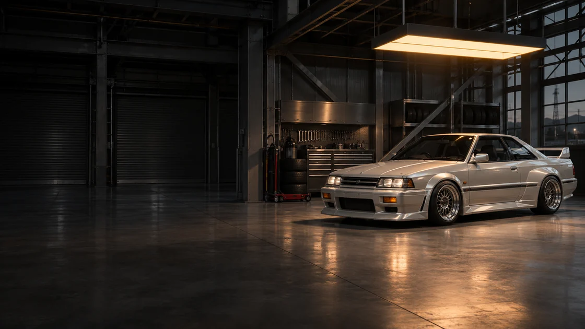

車両を探す
表示する性能と価格は、チューニング前のゲーム内の値です。
尾文字Z オリジナル （1）
-
omoji Z
尾文字Z オリジナル日本ロングセダン1,000 km/h5,000 PS
現行クラウン セダンをモチーフにしたオリジナル車。深い黒の塗装、縦格子グリル、横一線のテールランプを採用しました。
30,000,000 Z
特別販売を見る
初期車両 （66）
白鷹 86
旧車日本1985年FR143 PS最高速 195 km/hHT-86
軽量な３ドア。荷重移動に素直に反応し、タイトな連続コーナーで向きを変えやすい。
初期車両
ガレージで確認陽炎 R7
旧車日本1992年FR255 PS最高速 250 km/hKG-R7
低いノーズと軽快な応答が持ち味のロータリークーペ。中高速コーナーでリズムをつかみやすい。
初期車両
ガレージで確認雷鳴 G32
旧車日本1991年4WD282 PS最高速 255 km/hRM-G32
四輪駆動のツインターボ。雨に強く、立ち上がりで早めにアクセルを踏める。
初期車両
ガレージで確認流星 24
旧車日本1972年FR158 PS最高速 206 km/hNG-24
長いボンネットを持つ初期のスポーツクーペ。スロットルで後輪を滑らせ、旋回の向きを調整できる。
初期車両
ガレージで確認梓 M1
旧車日本1989年MR172 PS最高速 224 km/hAZ-M1
短い車体のミッドシップ。切り返しが鋭く、小さなヘアピンを得意とする。
初期車両
ガレージで確認アルペン 93
旧車ドイツ1974年RR212 PS最高速 231 km/hAP-93
リアに水平対向エンジンを載せた空冷クーペ。ブレーキを残して向きを変え、立ち上がりで後輪の荷重を生かせる。
初期車両
ガレージで確認トリノ V8
旧車イタリア1987年MR325 PS最高速 270 km/hTR-V8
幅広い後輪と高回転のV8。長い直線で伸びるぶん、きついコーナーでは早めの減速が要る。
初期車両
ガレージで確認セイバー 68
旧車アメリカ1968年FR309 PS最高速 243 km/hSB-68
大排気量V8を積んだファストバック。低速から力強く加速し、太いトルクでドリフトを維持しやすい。
初期車両
ガレージで確認ソーン L7
旧車イギリス1967年FR184 PS最高速 217 km/hTH-L7
ロングノーズの英国製GT。滑らかなパワーと穏やかな挙動で、長い下りでも速度を管理しやすい。
初期車両
ガレージで確認レオパール GT
旧車フランス1988年FF147 PS最高速 203 km/hLP-GT
短いホイールベースのホットハッチ。軽快に曲がり、前輪駆動ならではの扱いやすさを持つ。
初期車両
ガレージで確認雀 360
旧車日本1962年RR41 PS最高速 122 km/hSZ-36
後ろにエンジンを積んだ丸い軽量車。低速から向きが変わり、細い峠のコーナーを小さく回れる。
初期車両
ガレージで確認暁 20
旧車日本1967年FR151 PS最高速 197 km/hAK-20
細いピラーと長いボンネットを持つGT。小径タイヤと素直な加速で、丁寧な荷重移動が決まる。
初期車両
ガレージで確認朱鷺 R2
旧車日本1969年FR132 PS最高速 193 km/hTK-R2
長いファストバックと薄いノーズが特徴のロータリー車。回転を保ってコーナーをつなぐと速い。
初期車両
ガレージで確認疾風 GT-S
旧車日本1971年FR169 PS最高速 211 km/hHY-GT
張り出したリアフェンダーと丸形四灯。低めのギアで出口を狙う往年のツーリングクーペ。
初期車両
ガレージで確認花菱 16
旧車日本1973年FR116 PS最高速 184 km/hHB-16
細身のボディに軽快な4気筒を組み合わせた小型クーペ。ブレーキを残すと前輪が入りやすい。
初期車両
ガレージで確認厚木 RS
旧車日本1976年FR137 PS最高速 191 km/hAT-RS
小さなダックテールと張り出したフェンダーで固めた峠仕様。左右の切り返しに強い。
初期車両
ガレージで確認霞 21
旧車日本1978年FR145 PS最高速 196 km/hKS-21
長いドアとリトラクタブルライトの初期ロータリー。狭い路面でもスロットルでリアを調整しやすい。
初期車両
ガレージで確認箒星 28
旧車日本1981年FR184 PS最高速 215 km/hKM-28
長いノーズを持つ過給式グランドツアラー。高速の曲線では舵を小さく当てると伸びを生かせる。
初期車両
ガレージで確認烏丸 20T
旧車日本1984年FR191 PS最高速 221 km/hKR-20
フラットなノッチバックにターボを搭載。鋭い中間加速を使い、出口で一気に速度を取り戻す。
初期車両
ガレージで確認雲雀 T
旧車日本1986年FF122 PS最高速 180 km/hKU-12
短い車体と軽い鼻先のホットハッチ。雨の日でもスロットルを戻すだけで進路を修正しやすい。
初期車両
ガレージで確認漣 32
旧車日本1987年FR238 PS最高速 236 km/hSN-32
直列6気筒ターボを積む長距離GT。車重を感じる分、長い下りでの安定感がある。
初期車両
ガレージで確認雪椿 4
旧車日本1989年4WD214 PS最高速 218 km/hYT-44
補助灯と大きなリアウイングを備えた四輪駆動ラリー車。滑りやすい路面でも出口でしっかり蹴る。
初期車両
ガレージで確認月影 16
旧車日本1990年FR124 PS最高速 189 km/hTG-16
低いシートと短いテールのオープンFR。握り込まずに舵を戻すと、軽い後輪が自然に追従する。
初期車両
ガレージで確認渚 LX
旧車日本1991年MR278 PS最高速 257 km/hNG-LX
薄いキャビンとワイドな側面吸気口を持つミッドシップ。高速の切り返しで姿勢が落ち着きやすい。
初期車両
ガレージで確認彼方 VZ
旧車日本1993年FR299 PS最高速 265 km/hKT-VZ
湧き上がるような加速が持ち味のツインターボ。大型ウイングと長いホイールベースで高速域に強い。
初期車両
ガレージで確認村雨 WR
旧車日本1995年4WD263 PS最高速 236 km/hMS-WR
水平対向ターボの低重心セダン。縁石の出入りや雨の立ち上がりでも駆動力を掛けやすい。
初期車両
ガレージで確認山吹 EV
旧車日本1997年4WD285 PS最高速 241 km/hYB-EV
短いギア比で立ち上がりを狙う四輪駆動。急勾配でも加速が途切れにくい。
初期車両
ガレージで確認皐月 4T
旧車日本1998年4WD251 PS最高速 231 km/hST-4T
長いルーフの四輪駆動ワゴン。滑りやすい長いカーブで後輪の動きを読みやすい。
初期車両
ガレージで確認橘 S2
旧車日本1999年FR242 PS最高速 241 km/hTB-S2
高回転型の自然吸気オープン。2速から3速へつなぎながら、前後の荷重を細かく変えられる。
初期車両
ガレージで確認朧 LZ
旧車日本1999年FR248 PS最高速 246 km/hOB-LZ
細く伸びるヘッドライトと角のあるリアを持つターボFR。アクセルを少し抜くとスライドを整えやすい。
初期車両
ガレージで確認プファルツ 16
旧車ドイツ1964年RR93 PS最高速 163 km/hPF-16
丸屋根と絞り込んだテールの空冷車。重いリアを上手に使うと狭い上りでよく曲がる。
初期車両
ガレージで確認ライン 02
旧車ドイツ1973年FR172 PS最高速 214 km/hRH-02
角型の小型セダンに大きなホイールアーチ。普段は穏やかだが、過給が上がると伸びが増す。
初期車両
ガレージで確認ベルク Q4
旧車ドイツ1984年4WD268 PS最高速 232 km/hBE-Q4
短いテールと角張ったフェンダーの四輪駆動。濡れた峠でも深く踏んで駆動を使える。
初期車両
ガレージで確認ファルケン 30
旧車ドイツ1988年FR210 PS最高速 237 km/hFK-30
前後の空力パーツを持つツーリングカー。比較的に踏力を残した区間でも進行方向を合わせやすい。
初期車両
ガレージで確認ジルバー 16V
旧車ドイツ1990年FR228 PS最高速 245 km/hSL-16
直線的な4ドアに翼断面のウイング。低めの回転でもアクセルに穏やかに反応する。
初期車両
ガレージで確認フルス 16
旧車ドイツ1989年FF142 PS最高速 202 km/hFL-16
切り立ったリアと4灯のハッチバック。アクセルを緩めれば前輪が狙いに戻る素直な車。
初期車両
ガレージで確認イン RR
旧車ドイツ1996年RR288 PS最高速 273 km/hIN-RR
空冷フラット6のラウンドボディ。高速を保ったまま長く旋回すると後輪荷重を使える。
初期車両
ガレージで確認モンテ 16
旧車イタリア1968年FR129 PS最高速 193 km/hMT-16
細いメッキモールと二段ノーズの小型GT。高回転でつなぐほど軽いボディが生きる。
初期車両
ガレージで確認コルサ 18
旧車イタリア1970年FR148 PS最高速 198 km/hCS-18
鼻先の丸灯とメッキバンパーを備えるオープンGT。ブレーキと舵の動きが穏やかに伝わる。
初期車両
ガレージで確認ルーポ HF
旧車イタリア1976年MR196 PS最高速 231 km/hLU-HF
極端に短い車体と広いフロントガラスが特徴。タイトコーナーで軽い旋回と立ち上がりを両立する。
初期車両
ガレージで確認ヴァルコ 4S
旧車イタリア1986年4WD244 PS最高速 228 km/hVA-4S
大きな吸気口を持つ四輪駆動の競技用ハッチ。雨と急勾配で使いやすい太いトルクを持つ。
初期車両
ガレージで確認デュオモ TT
旧車イタリア1989年MR438 PS最高速 304 km/hDU-TT
高く立ち上がるリアウイングのツインターボ。直線の伸びが良く、早めのブレーキングで持ち味が出る。
初期車両
ガレージで確認ポンテ V8
旧車イタリア1997年MR342 PS最高速 275 km/hPT-V8
えぐれた側面と低いフロントのV8クーペ。操舵に対する反応が速く、中速コーナーをつなげやすい。
初期車両
ガレージで確認グレン 13
旧車イギリス1965年FF81 PS最高速 153 km/hGL-13
車輪を四隅に置いた小型FF。曲がる区間で車体の軽さを生かし、減速を抑えて走る。
初期車両
ガレージで確認ワイバーン 26
旧車イギリス1971年FR198 PS最高速 224 km/hWY-26
ボンネットの長い英国GT。進入で荷重を前にかけ、出口で直列6気筒の粘りを生かす。
初期車両
ガレージで確認フォックスリー S4
旧車イギリス1974年FR146 PS最高速 211 km/hFX-S4
薄い屋根なしボディに軽量シャシー。入力を小さく刻むと連続コーナーの出口がそろう。
初期車両
ガレージで確認シャーウッド TM
旧車イギリス1987年MR218 PS最高速 237 km/hSW-TM
直線を多用した軽量ミッドシップ。中速での舵の戻りが軽く、高低差のある区間を狙える。
初期車両
ガレージで確認ヘイル V8
旧車イギリス1996年FR306 PS最高速 265 km/hHA-V8
短い車体に大排気量V8を詰めたオープンFR。出口では後輪を滑らせずに踏量を調整したい。
初期車両
ガレージで確認ミロワール 13
旧車フランス1972年RR144 PS最高速 206 km/hMR-13
短いノーズに4灯を並べたリアエンジン車。小柄な車体でヘアピンの内側を狙いやすい。
初期車両
ガレージで確認セーヌ GT
旧車フランス1985年FF128 PS最高速 201 km/hSE-GT
車幅を広げた軽量ホットハッチ。坂の手前で小さく荷重を前へ寄せると素直に曲がる。
初期車両
ガレージで確認ルー GT6
旧車フランス1994年FF172 PS最高速 221 km/hRX-6
細いライトと6速ギアの自然吸気ハッチ。入力に対する遅れが小さく、狭い連続コーナー向き。
初期車両
ガレージで確認ノルデン T
旧車スウェーデン1985年FR179 PS最高速 210 km/hND-24
角張った北欧ワゴンにターボを搭載。長いホイールベースの安定感とFRの旋回を併せ持つ。
初期車両
ガレージで確認モラヴァ R
旧車チェコスロバキア1977年RR114 PS最高速 182 km/hMV-12
リアエンジンの小型競技クーペ。一瞬ブレーキを残して鼻を入れると、軽い車体が向きを変える。
初期車両
ガレージで確認メサ 60
旧車アメリカ1960年FR265 PS最高速 214 km/hME-60
幅の広いクロームグリルと長いデッキ。緩いコーナーを大きな半径で抜けるとトルクが生きる。
初期車両
ガレージで確認デビルズ 63
旧車アメリカ1963年FR310 PS最高速 238 km/hDV-63
短いキャビンと長いフロントのV8スポーツ。下りでは大きいギアを使うと姿勢がまとまりやすい。
初期車両
ガレージで確認ベイ 289
旧車アメリカ1965年FR281 PS最高速 237 km/hBY-289
コンパクトなオープンボディにV8を搭載。短いギアと太いトルクでスライドを長くつなげる。
初期車両
ガレージで確認ラプター 69
旧車アメリカ1969年FR378 PS最高速 249 km/hRP-69
大きな翼を持つ高速オーバル向けクーペ。峠ではブレーキを早めに当てて長い車体を扱う。
初期車両
ガレージで確認ファイアクレスト
旧車アメリカ1970年FR354 PS最高速 247 km/hFC-70
二分割のグリルと低いルーフを持つマッスルカー。横向きになったところから回転を合わせやすい。
初期車両
ガレージで確認ホライズン 76
旧車アメリカ1976年FR236 PS最高速 205 km/hHZ-76
平らな屋根と長いトランクのラグジュアリークーペ。アクセルが穏やかで、一定速度を保ちやすい。
初期車両
ガレージで確認エクリプス Z
旧車アメリカ1984年FR246 PS最高速 233 km/hEC-Z
ブラックノーズと長く寝たリアガラスが特徴。長いカーブで小さな舵角を保つと伸びる。
初期車両
ガレージで確認シエラ TC
旧車アメリカ1988年FR259 PS最高速 241 km/hSI-TC
黒い角型のターボクーペ。重い車体をトルクで前に出し、短い直線で差を詰める。
初期車両
ガレージで確認アロー ZR
旧車アメリカ1990年FR380 PS最高速 278 km/hAR-ZR
広いリアタイヤと薄いウェッジノーズのV8。ギアを上げて加速を落ち着かせると進路が整う。
初期車両
ガレージで確認キャニオン G
旧車アメリカ1997年FR421 PS最高速 290 km/hCY-G
大排気量と長いボンネットを持つワイドクーペ。早めに減速し、立ち上がりで加速を解放する。
初期車両
ガレージで確認トヨタ アクア Z
現代の日本車日本2021年FF116 PS最高速 174 km/hハイブリッドMXPK11
小柄なハイブリッド。止めすぎず旋回すると軽い車体を生かせる。
初期車両
ガレージで確認ホンダ フィット e:HEV RS
現代の日本車日本2022年FF123 PS最高速 175 km/hハイブリッドGR3
大きなガラス面と短いノーズのコンパクト。低速の曲がり始めが素直。
初期車両
ガレージで確認スズキ スイフト HYBRID MZ
現代の日本車日本2023年FF82 PS最高速 166 km/hマイルドハイブリッドZCEDS
小型のマイルドハイブリッド。軽い舵で狭いコースの練習に向く。
初期車両
ガレージで確認
旧車 （245）
旭 1300
旧車日本1958年FR68 PS最高速 146 km/hAS-13
高いキャビンと丸いモールを持つ小型の国民車。
価格 4,300 Z
ショップで確認夜鷹 SS
旧車日本1963年FR88 PS最高速 172 km/hYT-SS
切り詰めたテールと独立した丸形ランプの小柄なスポーツ。
価格 8,200 Z
ショップで確認朝霧 2000
旧車日本1964年FR121 PS最高速 164 km/hAG-20
丸みを残す車体と厚いメッキを備えた4ドア。
価格 7,400 Z
ショップで確認神楽 R
旧車日本1966年FR153 PS最高速 202 km/hKG-60
細い屋根と長い前部を備えた手仕上げ風のツアラー。
価格 16,800 Z
ショップで確認紫苑 16
旧車日本1968年FR108 PS最高速 177 km/hSH-16
なだらかな後窓と低い窓枠の国産ハードトップ。
価格 9,600 Z
ショップで確認美来 GT
旧車日本1969年FR135 PS最高速 201 km/hMI-GT
細く落ちるノーズと小さな回転式エンジンが持ち味。
価格 16,200 Z
ショップで確認燕 V
旧車日本1970年RR62 PS最高速 126 km/hTU-V
箱形の荷室を持つキャブオーバー。
価格 2,700 Z
ショップで確認野風ワゴン
旧車日本1972年FR107 PS最高速 158 km/hNK-W
直線的な側窓とルーフレールを備えた遠出用ワゴン。
価格 6,200 Z
ショップで確認青嵐 RS
旧車日本1974年FR150 PS最高速 193 km/hSE-RS
前部に補助灯を組み込み、短いホイールベースで軽く向きを変える。
価格 14,300 Z
ショップで確認黒潮 X
旧車日本1975年FR172 PS最高速 208 km/hKU-X
直列6気筒と長い荷室を組み合わせた2ドアツアラー。
価格 19,100 Z
ショップで確認天童 U
旧車日本1977年FR103 PS最高速 153 km/hTD-U
前輪を遠めに置いた荷台付き2ドア。
価格 5,400 Z
ショップで確認胡蝶 ZT
旧車日本1978年MR157 PS最高速 212 km/hKC-ZT
幅広いBピラーを持つ、ロータリー搭載タルガ。
価格 20,000 Z
ショップで確認調 10i
旧車日本1979年FF79 PS最高速 153 km/hSR-10
短い3ドアボディで街道の小さなカーブを曲がる。
価格 5,100 Z
ショップで確認雷峰 4
旧車日本1981年4WD155 PS最高速 195 km/hRH-4
四輪に穏やかに駆動を配る高い屋根のラリーセダン。
価格 14,900 Z
ショップで確認紅葉 GT
旧車日本1982年FR198 PS最高速 221 km/hMJ-GT
長く寝た後窓と太いトルクで、長い直線を伸ばす。
価格 23,900 Z
ショップで確認高砂 28
旧車日本1983年FR207 PS最高速 221 km/hTG-28
直線的な4ドアと控えめな過給機が特徴。
価格 24,100 Z
ショップで確認夕月 C
旧車日本1984年FR121 PS最高速 187 km/hYZ-C
小さな風防と短いリアを持つ軽いオープンカー。
価格 12,200 Z
ショップで確認絹 18
旧車日本1985年FF112 PS最高速 176 km/hKN-18
前輪駆動と細いタイヤで扱いやすい実用型セダン。
価格 9,500 Z
ショップで確認翡翠 T
旧車日本1986年FR214 PS最高速 233 km/hHS-T
低い側窓と横一文字のテール。長い変速比のツアラー。
価格 28,700 Z
ショップで確認千歳 WR
旧車日本1988年4WD194 PS最高速 214 km/hCT-WR
積雪地を意識した水平対向4気筒の荷室付き四輪駆動。
価格 21,400 Z
ショップで確認鵲 ターボ
旧車日本1989年FF135 PS最高速 184 km/hKS-TB
小型ターボと短い上段ギアで敏捷なホットハッチ。
価格 11,700 Z
ショップで確認朧月 RR
旧車日本1990年RR158 PS最高速 208 km/hOZ-RR
後輪軸の後ろに水平対向4気筒を置く珍しいクーペ。
価格 18,800 Z
ショップで確認時雨 RZ
旧車日本1991年4WD257 PS最高速 241 km/hSG-RZ
幅の広いフェンダーと立ったウイングを持つ四輪駆動。
価格 32,900 Z
ショップで確認美濃 ZR
旧車日本1992年MR204 PS最高速 234 km/hMN-ZR
リア側に過給機を載せたタルガ。長い下りで機敏な応答。
価格 28,900 Z
ショップで確認橘花 R
旧車日本1994年MR352 PS最高速 287 km/hTK-R
低い風防とレース用の大型リアウイングを装着。
価格 64,400 Z
ショップで確認八代 S
旧車日本1996年FR284 PS最高速 254 km/hYA-S
ゆとりのあるホイールベースと滑らかなトルクが特徴。
価格 39,100 Z
ショップで確認日の出 XR
旧車日本1998年4WD292 PS最高速 255 km/hHN-XR
大型ダクトと短い6段ギアで、高い駆動力を確保。
価格 39,800 Z
ショップで確認朱雀 6
旧車日本1999年FR320 PS最高速 272 km/hSZ-6R
長いフードと厚いリアクォーターを持つ90年代末のGT。
価格 48,700 Z
ショップで確認ザクセン 31
旧車ドイツ1931年FR95 PS最高速 138 km/hSC-31
立ったラジエーターと張り出す独立フェンダー。
価格 7,800 Z
ショップで確認アイヒェル 54
旧車ドイツ1954年FR112 PS最高速 163 km/hEI-54
背の高い風防と丸みを帯びた長距離セダン。
価格 7,100 Z
ショップで確認ラインペルレ
旧車ドイツ1956年FR164 PS最高速 208 km/hRP-56
低く絞ったラジエーターと長いフロントフェンダー。
価格 18,900 Z
ショップで確認ブリッツクーゲル
旧車ドイツ1959年RR44 PS最高速 122 km/hBK-59
短く丸いノーズを持つ空冷の街乗り車。
価格 2,600 Z
ショップで確認リンデ スポルト
旧車ドイツ1967年RR161 PS最高速 213 km/hLD-67
低いフードと高い後輪荷重を持つ空冷ファストバック。
価格 20,400 Z
ショップで確認アルプシュテルン 20
旧車ドイツ1970年FR128 PS最高速 181 km/hAL-20
四角いトランクと細いピラーを持つ2L級セダン。
価格 10,900 Z
ショップで確認ヴァルトゼー S
旧車ドイツ1975年FR183 PS最高速 212 km/hWD-S
長距離での安定性と後部の使いやすさを兼ねたツーリング車。
価格 20,600 Z
ショップで確認シャッテン 16
旧車ドイツ1982年FF115 PS最高速 178 km/hST-16
立ったリアハッチと短い変速比のスポーツ3ドア。
価格 10,000 Z
ショップで確認ガイアー Q
旧車ドイツ1983年4WD272 PS最高速 244 km/hGE-Q
広い前フェンダーと補強された四輪駆動が特徴。
価格 34,400 Z
ショップで確認ラインヴァルト 24
旧車ドイツ1987年FR181 PS最高速 216 km/hRW-24
長いテールと直立するリアガラスを持つ高速ワゴン。
価格 21,800 Z
ショップで確認ファルテ T
旧車ドイツ1990年RR286 PS最高速 269 km/hFT-90
太いロールバーとワイドな後部の空冷タルガ。
価格 46,400 Z
ショップで確認タウナス UR
旧車ドイツ1993年FR282 PS最高速 257 km/hTA-UR
走行姿勢のブレが少ない直6スポーツセダン。
価格 40,500 Z
ショップで確認グラウヴィント R
旧車ドイツ1996年MR418 PS最高速 306 km/hGW-R
ミッドシップV8と高いリアウイングを持つ軽量ロードレーサー。
価格 77,200 Z
ショップで確認ライン 32V
旧車ドイツ1998年FR322 PS最高速 264 km/hRH-V8
低回転の太いトルクと長いノーズを持つ大型クーペ。
価格 44,700 Z
ショップで確認ルビーノ 29
旧車イタリア1929年FR94 PS最高速 152 km/hRU-29
狭いコクピットと大径スポーク車輪の戦前型スポーツ。
価格 9,300 Z
ショップで確認ポネンテ 47
旧車イタリア1947年FR83 PS最高速 162 km/hPO-47
手で整えたような丸いノーズを持つ戦後型バルケッタ。
価格 6,500 Z
ショップで確認アルジェント S
旧車イタリア1956年FR228 PS最高速 238 km/hAR-56
ボンネットにV12を載せた細身のグランドツアラー。
価格 31,000 Z
ショップで確認ヴェスパイア 66
旧車イタリア1966年RR57 PS最高速 134 km/hVS-66
後部の冷却口と丸みを帯びた小型ボディ。
価格 3,200 Z
ショップで確認メリディオ 72
旧車イタリア1972年MR228 PS最高速 244 km/hMD-72
座席後方にV8を収めた薄いオープンボディ。
価格 33,500 Z
ショップで確認グラナータ 4
旧車イタリア1976年MR241 PS最高速 231 km/hGR-4
短い後部と補助灯の付いたミッドシップラリー車。
価格 28,500 Z
ショップで確認ヴァッラータ 20
旧車イタリア1979年FR141 PS最高速 188 km/hVL-20
高いルーフと太いメッキモールの小型セダン。
価格 12,800 Z
ショップで確認イッポグリフォ
旧車イタリア1981年MR276 PS最高速 260 km/hIP-81
側面吸気口と太いロールバーを備えたタルガ。
価格 41,800 Z
ショップで確認サリーナ HF
旧車イタリア1986年FF173 PS最高速 205 km/hSA-HF
前輪に駆動を集める短いホットハッチ。
価格 18,200 Z
ショップで確認ブリーナ 4T
旧車イタリア1989年4WD239 PS最高速 237 km/hBR-4T
車体の張り出しと大型リアスポイラーが目立つ4WD。
価格 30,800 Z
ショップで確認マルヴァジーア 24
旧車イタリア1992年FR258 PS最高速 249 km/hMV-24
4ドアながら低重心のキャビンを持つV8サルーン。
価格 36,300 Z
ショップで確認スティレット GT
旧車イタリア1995年MR473 PS最高速 316 km/hST-GT
細く絞ったフロントと幅広い後輪を持つV12。
価格 84,800 Z
ショップで確認カンパーナ V8
旧車イタリア1998年FR349 PS最高速 282 km/hCP-V8
滑らかな丸形ランプと張り出した後部を持つ高速GT。
価格 54,700 Z
ショップで確認ノースウィック 34
旧車イギリス1934年FR108 PS最高速 151 km/hNW-34
独立したフェンダーと細いウィンドウを持つ戦前型ツアラー。
価格 9,400 Z
ショップで確認オールドウィック S
旧車イギリス1952年FR148 PS最高速 194 km/hAW-S
絞ったテールと小さい風防を持つ英国ロードスター。
価格 14,500 Z
ショップで確認キャリック 100
旧車イギリス1957年FR126 PS最高速 183 km/hCA-100
後輪の上を盛り上げた2座席のオープンカー。
価格 11,300 Z
ショップで確認スターリング 2
旧車イギリス1960年FR146 PS最高速 177 km/hSL-2
端正なノーズと長いホイールベースのセダン。
価格 10,400 Z
ショップで確認ヤロウ 65
旧車イギリス1965年FF65 PS最高速 147 km/hYR-65
車輪を四隅に置いた前輪駆動の小型車。
価格 4,400 Z
ショップで確認クロフト GT
旧車イギリス1969年FR172 PS最高速 208 km/hCR-GT
長いルーフと跳ね上げ式テールゲートの英国GT。
価格 19,100 Z
ショップで確認ロウフェル T
旧車イギリス1971年MR142 PS最高速 199 km/hLF-71
車重を抑えたタルガ。小さなコーナーで特に軽快。
価格 15,800 Z
ショップで確認フェンウィック M
旧車イギリス1976年FR120 PS最高速 178 km/hFW-76
長い後窓と細いタイヤを使う穏やかなスポーツクーペ。
価格 10,100 Z
ショップで確認ハウンド 27
旧車イギリス1979年FR263 PS最高速 242 km/hHD-27
厚い前フェンダーとV8を載せた高速ツアラー。
価格 33,400 Z
ショップで確認リッジバック R
旧車イギリス1984年FR207 PS最高速 224 km/hRB-84
前輪より後輪の荷重を厚くしたラリー仕様。
価格 25,200 Z
ショップで確認ウィックロー T
旧車イギリス1990年FR282 PS最高速 251 km/hWL-90
軽いオープン車体に強いトルクを組み合わせた2座席。
価格 37,700 Z
ショップで確認ペンドル LM
旧車イギリス1995年MR455 PS最高速 318 km/hPD-LM
極端に低いキャビンと幅広い後タイヤの公道仕様。
価格 85,700 Z
ショップで確認エトワール 38
旧車フランス1938年FR116 PS最高速 156 km/hET-38
細いラジエーターグリルと流麗な独立フェンダー。
価格 10,300 Z
ショップで確認シガル 52
旧車フランス1952年FF37 PS最高速 114 km/hCG-52
軽いドアと幅の狭い前輪を使う簡素なコンパクト。
価格 2,400 Z
ショップで確認マレ 58
旧車フランス1958年FR117 PS最高速 170 km/hMA-58
ゆるやかに傾くルーフと滑らかな長距離向けの足回り。
価格 8,400 Z
ショップで確認パンソン 65
旧車フランス1965年RR91 PS最高速 176 km/hPI-65
細いフロントと広がった後輪周りのリアエンジン車。
価格 9,100 Z
ショップで確認ルシオール 71
旧車フランス1971年FF86 PS最高速 155 km/hLC-71
しなやかなサスペンションを使う軽量4ドア。
価格 5,400 Z
ショップで確認オランジュリー
旧車フランス1975年FF170 PS最高速 199 km/hOR-75
広いフロントウィンドウと長いワイドノーズのGT。
価格 16,300 Z
ショップで確認コルモラン T
旧車フランス1979年FR162 PS最高速 204 km/hCO-79
真っすぐ伸びた屋根の下に荷室を持つ2ドア。
価格 17,600 Z
ショップで確認ミストラル AX
旧車フランス1985年MR239 PS最高速 232 km/hMS-AX
中央にターボを載せ、張り出した側面から空気を取り込む。
価格 28,900 Z
ショップで確認ブリュイエール 16
旧車フランス1991年FF137 PS最高速 192 km/hBY-16
丸いハッチと、小径タイヤの軽快な向き変えが持ち味。
価格 13,800 Z
ショップで確認サンドル GT
旧車フランス1997年MR364 PS最高速 293 km/hCN-GT
過給した6気筒を積み、高いウイングで高速姿勢を整える。
価格 68,100 Z
ショップで確認マーケット 36
旧車アメリカ1936年FR115 PS最高速 146 km/hMQ-36
独立したフロントフェンダーと長いランニングボード。
価格 9,000 Z
ショップで確認プレーリー 51
旧車アメリカ1951年FR125 PS最高速 155 km/hPR-51
白いタイヤ側面と丸い4ドアボディが特徴。
価格 6,100 Z
ショップで確認サンクレスト 55
旧車アメリカ1955年FR195 PS最高速 185 km/hSU-55
ワイドなフロントと大きなリアフィンの2ドア。
価格 13,200 Z
ショップで確認ロックランド U
旧車アメリカ1959年FR205 PS最高速 175 km/hRC-U
寝かせた風防とボディ一体型荷台のクーペユーティリティ。
価格 11,200 Z
ショップで確認エバーグレード W
旧車アメリカ1961年FR214 PS最高速 171 km/hEG-W
長く広い木枠風荷室と厚みのあるリア側面。
価格 10,600 Z
ショップで確認コブル 63
旧車アメリカ1963年FR285 PS最高速 232 km/hCB-63
曲面のノーズと高出力V8の小型ロードスター。
価格 29,800 Z
ショップで確認ファーネス 66
旧車アメリカ1966年FR345 PS最高速 236 km/hFU-66
深いグリルと3分割テール、低回転から出るトルクが特徴。
価格 32,700 Z
ショップで確認バッドランズ 70
旧車アメリカ1970年FR417 PS最高速 254 km/hBL-70
大きく張ったリアフェンダーとワイドトレッドを持つ。
価格 41,900 Z
ショップで確認フロストライン V
旧車アメリカ1972年FR143 PS最高速 147 km/hFL-V
幅の広い風防と高く四角い荷室のキャブオーバー。
価格 5,500 Z
ショップで確認ベイフィールド 77
旧車アメリカ1977年FR197 PS最高速 184 km/hBF-77
大型のメッキバンパーと小窓を持つ長身ハードトップ。
価格 13,000 Z
ショップで確認パロミノ 82
旧車アメリカ1982年FR206 PS最高速 210 km/hPA-82
角型ランプと傾いたリアゲートを組み合わせた米国クーペ。
価格 20,400 Z
ショップで確認ゴールドラッシュ T
旧車アメリカ1987年FR267 PS最高速 244 km/hGR-T
控えめな外観とターボ付き6気筒を組み合わせる。
価格 34,300 Z
ショップで確認アイアンレイク U
旧車アメリカ1990年FR309 PS最高速 223 km/hIL-U
幅広いタイヤとボンネットの高いV8搭載ピックアップ。
価格 27,000 Z
ショップで確認ウルヴァリン Z
旧車アメリカ1994年FR366 PS最高速 280 km/hWO-Z
太いサイドシルとタルガバーを持つ6速V8。
価格 53,900 Z
ショップで確認サンダーヘッド 98
旧車アメリカ1998年MR489 PS最高速 327 km/hTH-98
高出力V8を積み、レース用の幅広い車輪を装着。
価格 92,600 Z
ショップで確認オースタン 58
旧車スウェーデン1958年FR85 PS最高速 151 km/hOS-58
狭いスタッドレスタイヤと丸いルーフの北欧4ドア。
価格 4,900 Z
ショップで確認ロールンド S
旧車スウェーデン1965年FR116 PS最高速 185 km/hRL-S
丸いボンネットと独立した2席を持つ小型スポーツ。
価格 11,600 Z
ショップで確認フロスタ R
旧車スウェーデン1972年FF139 PS最高速 181 km/hFS-R
フロントに短い補助灯を吊り下げた北欧ラリー車。
価格 11,100 Z
ショップで確認ヘーグベリ T
旧車スウェーデン1989年FR197 PS最高速 213 km/hHG-T
縦型テールと高い荷室を持つ過給ワゴン。
価格 21,200 Z
ショップで確認クリッパ S
旧車スウェーデン1997年FF251 PS最高速 247 km/hKP-S
落ち着いたサルーンに力強い前輪駆動を採用。
価格 35,300 Z
ショップで確認スニェシュカ 46
旧車チェコスロバキア1946年FR73 PS最高速 127 km/hSZ-46
戦前設計を残す、狭いフェンダーのツアラー。
価格 2,800 Z
ショップで確認ヴルタヴァ 60
旧車チェコスロバキア1960年RR132 PS最高速 171 km/hVT-60
後輪より後ろに空冷V8を載せる流線型セダン。
価格 8,900 Z
ショップで確認オルロヴァ R
旧車チェコスロバキア1973年RR102 PS最高速 176 km/hOL-R
軽い前部と幅広いリアフェンダーを持つ試作スポーツ。
価格 9,300 Z
ショップで確認ヤヴォル 13
旧車チェコスロバキア1986年RR145 PS最高速 192 km/hJV-13
後輪駆動の小排気量ラリー車。短いシフトで加速をつなぐ。
価格 13,900 Z
ショップで確認インブリュッケ
旧車オーストリア1948年FR72 PS最高速 144 km/hIB-48
丸い前部を小径タイヤで支える戦後の小型スポーツ。
価格 4,100 Z
ショップで確認アルムタール 59
旧車オーストリア1959年RR39 PS最高速 113 km/hAT-59
幅が狭く車体が丸い山里の移動用マイクロカー。
価格 2,400 Z
ショップで確認グライフェン 81
旧車オーストリア1981年4WD184 PS最高速 200 km/hGF-81
厚いサイドシルと車高の高い四輪駆動。
価格 16,900 Z
ショップで確認アサアール 54
旧車スペイン1954年FR173 PS最高速 213 km/hAZ-54
曲面のフェンダーと長いノーズを持つ地中海のGT。
価格 20,700 Z
ショップで確認タホ クーペ
旧車スペイン1968年RR102 PS最高速 166 km/hTJ-C
すべらかな後部に冷却口を設けた空冷クーペ。
価格 7,400 Z
ショップで確認クンブレス 24
旧車スペイン1982年FR172 PS最高速 207 km/hCM-24
短いギアと厚いタイヤで荒れた山道向けに調整。
価格 18,700 Z
ショップで確認ナカル 98
旧車スペイン1998年FF188 PS最高速 221 km/hNC-98
低めのフードと短いリアゲートの90年代ホットハッチ。
価格 23,700 Z
ショップで確認ワトル 65
旧車オーストラリア1965年FR148 PS最高速 174 km/hWT-65
長い荷室を持つ実用ワゴン。余裕のある直6を積む。
価格 9,800 Z
ショップで確認マルヴァーン U
旧車オーストラリア1971年FR273 PS最高速 211 km/hML-U
トラックの荷台とスポーツクーペの前半を組み合わせる。
価格 22,100 Z
ショップで確認ソルトブッシュ 77
旧車オーストラリア1977年FR331 PS最高速 238 km/hSL-77
太いトルクと長いファストバックのオーストラリアンGT。
価格 33,200 Z
ショップで確認ダーリング V8
旧車オーストラリア1998年FR337 PS最高速 262 km/hDG-V8
前輪回りを補強した大柄なツーリングセダン。
価格 44,000 Z
ショップで確認パイネイラ 61
旧車ブラジル1961年RR51 PS最高速 122 km/hPN-61
丸いキャビンと空冷水平対向エンジンの小型車。
価格 2,600 Z
ショップで確認アグアラ 70
旧車ブラジル1970年RR100 PS最高速 177 km/hAQ-70
軽いオープンボディを後輪で押し出す。
価格 9,500 Z
ショップで確認アロエイラ S
旧車ブラジル1977年FR174 PS最高速 202 km/hAO-S
ワイドな後面灯と丸い後窓の南米ツアラー。
価格 17,300 Z
ショップで確認トゥカーノ G
旧車ブラジル1993年FF148 PS最高速 191 km/hTC-G
短いノーズにターボ付き4気筒を収めた小型車。
価格 13,700 Z
ショップで確認モレーン 55
旧車カナダ1955年FR182 PS最高速 173 km/hMO-55
クロームのグリルと立ち上がるリアフェンダーを備える。
価格 10,400 Z
ショップで確認ジャスパー 67
旧車カナダ1967年FR294 PS最高速 227 km/hJS-67
深い屋根の付いた大型ハードトップ。
価格 28,100 Z
ショップで確認タマラック U
旧車カナダ1981年FR167 PS最高速 170 km/hTM-U
滑りやすい路面でも穏やかなトルクを使える荷台付きの旧車。
価格 9,500 Z
ショップで確認ケベック ZT
旧車カナダ1991年FR271 PS最高速 254 km/hQB-ZT
横一文字のライトを備えたチューブ補強のタルガ。
価格 38,900 Z
ショップで確認マース 48
旧車オランダ1948年FR61 PS最高速 131 km/hMA-48
縦に長いフロントランプと細いホイールを持つ。
価格 3,000 Z
ショップで確認ダイン 62
旧車オランダ1962年RR47 PS最高速 130 km/hDU-62
狭い街路に合わせた丸いマイクロクーペ。
価格 2,900 Z
ショップで確認リヴィール 72
旧車オランダ1972年FR151 PS最高速 195 km/hRV-72
リアハッチと薄いルーフを組み合わせた2ドア。
価格 14,800 Z
ショップで確認アーレ 53
旧車スイス1953年FR126 PS最高速 181 km/hAA-53
なだらかなフロントフェンダーと短いテール。
価格 10,900 Z
ショップで確認ツェントラル 68
旧車スイス1968年FR225 PS最高速 228 km/hZE-68
低い窓枠と大排気量エンジンが持ち味の高速クーペ。
価格 27,000 Z
ショップで確認ローナ 87
旧車スイス1987年4WD216 PS最高速 218 km/hRN-87
補助灯と短いギアを備えた山岳仕様。
価格 23,200 Z
ショップで確認ソコル 51
旧車ソ連1951年FR100 PS最高速 142 km/hSO-51
丸みを持つ大柄な公用型セダン。
価格 4,100 Z
ショップで確認ヴォルナ ワゴン
旧車ソ連1964年FR99 PS最高速 150 km/hVO-W
車体後半に大きな側窓を備えた実用ワゴン。
価格 4,900 Z
ショップで確認ブラーン R
旧車ソ連1986年4WD170 PS最高速 196 km/hBU-R
薄いフロントの下に補助灯を配置した競技用4WD。
価格 15,500 Z
ショップで確認ヴィスワ 57
旧車ポーランド1957年FR62 PS最高速 129 km/hWL-57
丸型灯と控えめなメッキが特徴の実用セダン。
価格 2,900 Z
ショップで確認ヤヴォル 71
旧車ポーランド1971年RR51 PS最高速 132 km/hJW-71
短いホイールベースと丸いノーズの小型車。
価格 3,000 Z
ショップで確認リビトヴァ G
旧車ポーランド1991年FF108 PS最高速 174 km/hRB-G
コンパクトな4気筒前輪駆動。
価格 9,000 Z
ショップで確認ロイム R
旧車フィンランド1973年FR153 PS最高速 186 km/hLO-R
雪と砂利を想定した細いタイヤのラリー仕様。
価格 12,600 Z
ショップで確認トゥイスク W
旧車フィンランド1986年4WD187 PS最高速 205 km/hTS-W
四輪駆動と屋根の高い荷室を組み合わせた小型ワゴン。
価格 18,400 Z
ショップで確認ソレ 76
旧車韓国1976年FR88 PS最高速 152 km/hSR-76
線の細い4ドアセダン。アクセル応答は穏やか。
価格 5,000 Z
ショップで確認デウン 18
旧車韓国1988年FF107 PS最高速 172 km/hDE-18
大きなキャビンと短いリアオーバーハング。
価格 8,600 Z
ショップで確認ハヌル GT
旧車韓国1997年FF181 PS最高速 215 km/hHN-GT
傾いた後窓と低いノーズのスポーツクーペ。
価格 21,500 Z
ショップで確認オンブー 60
旧車アルゼンチン1960年FR122 PS最高速 157 km/hOM-60
高いフェンダーと幅の広いクロームモール。
価格 6,400 Z
ショップで確認パンパ U
旧車アルゼンチン1968年FR148 PS最高速 175 km/hPM-U
長い荷台と丸形灯を持つ作業用クーペ。
価格 10,000 Z
ショップで確認カルデン GT
旧車アルゼンチン1976年FR214 PS最高速 217 km/hCD-GT
大型クーペに6気筒を搭載。広い路面で速度を伸ばす。
価格 22,900 Z
ショップで確認エズベイ S
旧車ベルギー1955年FR103 PS最高速 169 km/hHE-S
丸い前フェンダーと小さなオープンコクピット。
価格 7,900 Z
ショップで確認ムーズ 66
旧車ベルギー1966年FR158 PS最高速 198 km/hMU-66
側窓を長く取った小さなグランドツアラー。
価格 15,800 Z
ショップで確認ケア 64
旧車ニュージーランド1964年FR112 PS最高速 182 km/hKE-64
低い風防と素直な後輪の軽量スピードスター。
価格 10,800 Z
ショップで確認トタラ 82
旧車ニュージーランド1982年FR254 PS最高速 230 km/hTO-82
ボンネットにV8を載せた小規模工房風のGT。
価格 28,400 Z
ショップで確認トヨタ 2000GT
旧車日本1967年FR156 PS最高速 218 km/h直列6気筒MF10
絞り込んだロングノーズのGT。舵を残しすぎず、一度の進入で弧を描くと安定する。
価格 45,000 Z
ショップで確認トヨタ セリカ GT-FOUR
旧車日本1994年4WD258 PS最高速 237 km/h直列4気筒ターボST205
4灯のフロントを持つ四輪駆動。ウェットの立ち上がりで加速しやすい。
価格 36,000 Z
ショップで確認トヨタ MR2 GT-S
旧車日本1993年MR231 PS最高速 232 km/h直列4気筒ターボSW20
コンパクトなミッドシップ。ブレーキングを終えてから舵を入れると切り返しを生かせる。
価格 27,500 Z
ショップで確認トヨタ スープラ RZ
旧車日本1993年FR290 PS最高速 260 km/h直列6気筒ターボJZA80
丸みのあるファストバックと長いボンネット。直線につながる出口でトルクが効く。
価格 51,000 Z
ショップで確認トヨタ チェイサー ツアラーV
旧車日本1996年FR283 PS最高速 239 km/h直列6気筒ターボJZX100
後輪駆動の4ドア。長めのホイールベースでアクセルを使った旋回を続けやすい。
価格 28,000 Z
ショップで確認日産 シルビア spec-R
旧車日本1999年FR248 PS最高速 238 km/h直列4気筒ターボS15
細いヘッドランプを持つFRクーペ。中速までのドリフトや切り返しで扱いやすい。
価格 29,000 Z
ショップで確認日産 スカイライン GT-R Vスペック
旧車日本1999年4WD291 PS最高速 265 km/h直列6気筒ターボBNR34
丸形テールと固定翼を備えた四輪駆動。ロングコーナー出口で安定した加速を引き出せる。
価格 69,000 Z
ショップで確認日産 フェアレディZ ツインターボ
旧車日本1989年FR282 PS最高速 251 km/hV型6気筒ターボZ32
幅のある低いノーズが目印。減速を先に済ませて高速区間へつなげたい。
価格 34,000 Z
ショップで確認日産 パルサー GTI-R
旧車日本1990年4WD228 PS最高速 225 km/h直列4気筒ターボRNN14
短いボディにターボと4WDを搭載。狭い路面や低速区間で立ち上がりが強い。
価格 21,800 Z
ショップで確認ダットサン ブルーバード 1600 SSS
旧車日本1967年FR109 PS最高速 176 km/h直列4気筒510
軽い角形セダン。スピードの落としすぎを避けると長いコーナーをつなげやすい。
価格 8,700 Z
ショップで確認ホンダ NSX-R
旧車日本2002年MR286 PS最高速 273 km/hV型6気筒NA2
低い車体にリアウイングを組み合わせたミッドシップ。繊細なアクセル操作で回頭しやすい。
価格 78,000 Z
ショップで確認ホンダ インテグラ TYPE R
旧車日本1998年FF202 PS最高速 225 km/h直列4気筒DC2
軽量の前輪駆動クーペ。入口で車の向きを決め、出口では踏み増しを急がないのがコツ。
価格 22,500 Z
ショップで確認ホンダ S2000
旧車日本1999年FR249 PS最高速 239 km/h直列4気筒AP1
低く短いオープンFR。早めに向きを変えれば高回転域を保ちやすい。
価格 32,300 Z
ショップで確認ホンダ CR-X SiR
旧車日本1989年FF162 PS最高速 205 km/h直列4気筒EF8
薄いルーフと短いリアを持つユーティリティクーペ。狭い連続コーナーで軽さが出る。
価格 14,900 Z
ショップで確認ホンダ ビート
旧車日本1991年MR66 PS最高速 155 km/h直列3気筒PP1
小さなオープンミッドシップ。速度の差は早い切り返しと短い制動で補える。
価格 6,300 Z
ショップで確認マツダ RX-7 スピリットR
旧車日本2002年FR279 PS最高速 257 km/hロータリーターボFD3S
低いノーズのロータリークーペ。中速域の姿勢変化が滑らかでドリフトに向く。
価格 49,800 Z
ショップで確認オートザム AZ-1
旧車日本1992年MR65 PS最高速 161 km/h直列3気筒ターボPG6SA
低いシルエットの軽ミッドシップ。細いテクニカル区間でノーズの軽さを生かせる。
価格 9,100 Z
ショップで確認マツダ ルーチェ ロータリーターボ
旧車日本1986年FR183 PS最高速 211 km/hロータリーターボHC3S
伸びやかな4ドアのロータリー車。急な舵より荷重を移しながら長い弧を描くのが得意。
価格 17,600 Z
ショップで確認スバル インプレッサ 22B-STi
旧車日本1998年4WD282 PS最高速 246 km/h水平対向4気筒ターボGC8 22B
張り出したフェンダーと4WDの組み合わせ。濡れた連続コーナーで踏み直しやすい。
価格 52,000 Z
ショップで確認三菱 ランサーエボリューション VI TME
旧車日本2000年4WD282 PS最高速 247 km/h直列4気筒ターボCP9A
固定翼付きの4ドア4WD。減速と再加速を短く区切るコース向き。
価格 44,000 Z
ショップで確認三菱 パジェロ エボリューション
旧車日本1997年4WD278 PS最高速 209 km/hV型6気筒V55W
短いホイールベースと高いボディの四輪駆動。早めにブレーキを使い、出口ではトラクションに任せられる。
価格 38,000 Z
ショップで確認ランチア ストラトス HF
旧車イタリア1974年MR193 PS最高速 227 km/hV型6気筒STRATOS HF
短いウェッジボディのミッドシップ。ヘアピンを得意とするが、高速では小さな舵を使いたい。
価格 46,000 Z
ショップで確認プジョー 205 ターボ16
旧車フランス1984年4WD201 PS最高速 223 km/h直列4気筒ターボ205 T16
張り出した後部フェンダーの小柄な4WD。荒れた舗装でもアクセルのオンオフを作りやすい。
価格 37,000 Z
ショップで確認ホールデン トラーナ A9X
旧車オーストラリア1977年FR249 PS最高速 229 km/hV型8気筒LX A9X
幅を持たせたファストバックのV8。ゆるいコーナーの向きづけにアクセルを使える。
価格 24,000 Z
ショップで確認明石クーペ 標準
日本1984年FR142 PS190 km/h
細身の軽量FR。小さな荷重移動から回頭を作れる。標準仕様。 架空モデル。
価格 6,800 Z
ショップで確認明石クーペ ツーリング
日本1985年FR138 PS194 km/h
細身の軽量FR。小さな荷重移動から回頭を作れる。ロングギアと穏やかな反応を選んだ長距離仕様。 架空モデル。
価格 7,500 Z
ショップで確認明石クーペ クラブ
日本1985年FR156 PS191 km/h
細身の軽量FR。小さな荷重移動から回頭を作れる。車重を落として立ち上がりと切り返しを優先。 架空モデル。
価格 8,300 Z
ショップで確認明石クーペ トラクション
日本1986年4WD148 PS186 km/h
細身の軽量FR。小さな荷重移動から回頭を作れる。駆動力とグリップを高めた四輪駆動仕様。 架空モデル。
価格 9,200 Z
ショップで確認明石クーペ スライド
日本1986年FR165 PS187 km/h
細身の軽量FR。小さな荷重移動から回頭を作れる。後輪駆動と旋回反応を活かすスライド向け仕様。 架空モデル。
価格 9,500 Z
ショップで確認明石クーペ ハイスピード
日本1987年FR176 PS203 km/h
細身の軽量FR。小さな荷重移動から回頭を作れる。ロングギアと空力を合わせ、高速域の伸びを重視。 架空モデル。
価格 10,400 Z
ショップで確認明石クーペ タイムアタック
日本1988年FR168 PS196 km/h
細身の軽量FR。小さな荷重移動から回頭を作れる。幅広タイヤと軽量ボディで制動・旋回・再加速を強化。 架空モデル。
価格 11,400 Z
ショップで確認神代ターボ 標準
日本1986年FR185 PS209 km/h
水平基調の4ドアとロータリー。伸びを活かした大きな弧が得意。標準仕様。 架空モデル。
価格 19,600 Z
ショップで確認神代ターボ ツーリング
日本1987年FR179 PS213 km/h
水平基調の4ドアとロータリー。伸びを活かした大きな弧が得意。ロングギアと穏やかな反応を選んだ長距離仕様。 架空モデル。
価格 21,600 Z
ショップで確認神代ターボ クラブ
日本1987年FR204 PS210 km/h
水平基調の4ドアとロータリー。伸びを活かした大きな弧が得意。車重を落として立ち上がりと切り返しを優先。 架空モデル。
価格 23,900 Z
ショップで確認神代ターボ トラクション
日本1988年4WD192 PS205 km/h
水平基調の4ドアとロータリー。伸びを活かした大きな弧が得意。駆動力とグリップを高めた四輪駆動仕様。 架空モデル。
価格 26,700 Z
ショップで確認神代ターボ スライド
日本1988年FR215 PS206 km/h
水平基調の4ドアとロータリー。伸びを活かした大きな弧が得意。後輪駆動と旋回反応を活かすスライド向け仕様。 架空モデル。
価格 27,400 Z
ショップで確認神代ターボ ハイスピード
日本1989年FR229 PS222 km/h
水平基調の4ドアとロータリー。伸びを活かした大きな弧が得意。ロングギアと空力を合わせ、高速域の伸びを重視。 架空モデル。
価格 30,000 Z
ショップで確認神代ターボ タイムアタック
日本1990年FR218 PS215 km/h
水平基調の4ドアとロータリー。伸びを活かした大きな弧が得意。幅広タイヤと軽量ボディで制動・旋回・再加速を強化。 架空モデル。
価格 32,700 Z
ショップで確認山瀬ジムカーナ 標準
日本1990年4WD181 PS214 km/h
短いハッチバックをベースにした四輪駆動。発進と切り返しに向く。標準仕様。 架空モデル。
価格 16,600 Z
ショップで確認山瀬ジムカーナ ツーリング
日本1991年4WD176 PS218 km/h
短いハッチバックをベースにした四輪駆動。発進と切り返しに向く。ロングギアと穏やかな反応を選んだ長距離仕様。 架空モデル。
価格 18,300 Z
ショップで確認山瀬ジムカーナ クラブ
日本1991年4WD199 PS215 km/h
短いハッチバックをベースにした四輪駆動。発進と切り返しに向く。車重を落として立ち上がりと切り返しを優先。 架空モデル。
価格 20,300 Z
ショップで確認山瀬ジムカーナ トラクション
日本1992年4WD188 PS210 km/h
短いハッチバックをベースにした四輪駆動。発進と切り返しに向く。駆動力とグリップを高めた四輪駆動仕様。 架空モデル。
価格 22,600 Z
ショップで確認山瀬ジムカーナ スライド
日本1992年FR210 PS211 km/h
短いハッチバックをベースにした四輪駆動。発進と切り返しに向く。後輪駆動と旋回反応を活かすスライド向け仕様。 架空モデル。
価格 23,200 Z
ショップで確認山瀬ジムカーナ ハイスピード
日本1993年4WD224 PS227 km/h
短いハッチバックをベースにした四輪駆動。発進と切り返しに向く。ロングギアと空力を合わせ、高速域の伸びを重視。 架空モデル。
価格 25,400 Z
ショップで確認山瀬ジムカーナ タイムアタック
日本1994年4WD214 PS220 km/h
短いハッチバックをベースにした四輪駆動。発進と切り返しに向く。幅広タイヤと軽量ボディで制動・旋回・再加速を強化。 架空モデル。
価格 27,700 Z
ショップで確認大浜スパイダー 標準
日本1991年MR63 PS148 km/h
小さな2座のミッドシップ。扱いやすい速度でラインを試せる。標準仕様。 架空モデル。
価格 4,100 Z
ショップで確認大浜スパイダー ツーリング
日本1992年MR61 PS152 km/h
小さな2座のミッドシップ。扱いやすい速度でラインを試せる。ロングギアと穏やかな反応を選んだ長距離仕様。 架空モデル。
価格 4,500 Z
ショップで確認大浜スパイダー クラブ
日本1992年MR69 PS149 km/h
小さな2座のミッドシップ。扱いやすい速度でラインを試せる。車重を落として立ち上がりと切り返しを優先。 架空モデル。
価格 5,000 Z
ショップで確認大浜スパイダー トラクション
日本1993年4WD66 PS144 km/h
小さな2座のミッドシップ。扱いやすい速度でラインを試せる。駆動力とグリップを高めた四輪駆動仕様。 架空モデル。
価格 5,600 Z
ショップで確認大浜スパイダー スライド
日本1993年MR73 PS145 km/h
小さな2座のミッドシップ。扱いやすい速度でラインを試せる。後輪駆動と旋回反応を活かすスライド向け仕様。 架空モデル。
価格 5,700 Z
ショップで確認大浜スパイダー ハイスピード
日本1994年MR78 PS161 km/h
小さな2座のミッドシップ。扱いやすい速度でラインを試せる。ロングギアと空力を合わせ、高速域の伸びを重視。 架空モデル。
価格 6,300 Z
ショップで確認大浜スパイダー タイムアタック
日本1995年MR74 PS154 km/h
小さな2座のミッドシップ。扱いやすい速度でラインを試せる。幅広タイヤと軽量ボディで制動・旋回・再加速を強化。 架空モデル。
価格 6,800 Z
ショップで確認道草バン 標準
日本1973年RR62 PS126 km/h
短い車体に箱形キャビンを載せた後輪駆動。狭いコースで車幅をつかみやすい。標準仕様。 架空モデル。
価格 3,000 Z
ショップで確認道草バン ツーリング
日本1974年RR60 PS130 km/h
短い車体に箱形キャビンを載せた後輪駆動。狭いコースで車幅をつかみやすい。ロングギアと穏やかな反応を選んだ長距離仕様。 架空モデル。
価格 3,300 Z
ショップで確認道草バン クラブ
日本1974年RR68 PS127 km/h
短い車体に箱形キャビンを載せた後輪駆動。狭いコースで車幅をつかみやすい。車重を落として立ち上がりと切り返しを優先。 架空モデル。
価格 3,700 Z
ショップで確認道草バン トラクション
日本1975年4WD64 PS122 km/h
短い車体に箱形キャビンを載せた後輪駆動。狭いコースで車幅をつかみやすい。駆動力とグリップを高めた四輪駆動仕様。 架空モデル。
価格 4,100 Z
ショップで確認道草バン スライド
日本1975年RR72 PS123 km/h
短い車体に箱形キャビンを載せた後輪駆動。狭いコースで車幅をつかみやすい。後輪駆動と旋回反応を活かすスライド向け仕様。 架空モデル。
価格 4,200 Z
ショップで確認道草バン ハイスピード
日本1976年RR77 PS139 km/h
短い車体に箱形キャビンを載せた後輪駆動。狭いコースで車幅をつかみやすい。ロングギアと空力を合わせ、高速域の伸びを重視。 架空モデル。
価格 4,600 Z
ショップで確認道草バン タイムアタック
日本1977年RR73 PS132 km/h
短い車体に箱形キャビンを載せた後輪駆動。狭いコースで車幅をつかみやすい。幅広タイヤと軽量ボディで制動・旋回・再加速を強化。 架空モデル。
価格 5,000 Z
ショップで確認ヴェラ 6 標準
ドイツ1972年RR184 PS216 km/h
後輪軸に荷重が乗るクーペ。アクセルを緩める位置で旋回が変わる。標準仕様。 架空モデル。
価格 21,100 Z
ショップで確認ヴェラ 6 ツーリング
ドイツ1973年RR178 PS220 km/h
後輪軸に荷重が乗るクーペ。アクセルを緩める位置で旋回が変わる。ロングギアと穏やかな反応を選んだ長距離仕様。 架空モデル。
価格 23,200 Z
ショップで確認ヴェラ 6 クラブ
ドイツ1973年RR202 PS217 km/h
後輪軸に荷重が乗るクーペ。アクセルを緩める位置で旋回が変わる。車重を落として立ち上がりと切り返しを優先。 架空モデル。
価格 25,700 Z
ショップで確認ヴェラ 6 トラクション
ドイツ1974年4WD191 PS212 km/h
後輪軸に荷重が乗るクーペ。アクセルを緩める位置で旋回が変わる。駆動力とグリップを高めた四輪駆動仕様。 架空モデル。
価格 28,700 Z
ショップで確認ヴェラ 6 スライド
ドイツ1974年RR213 PS213 km/h
後輪軸に荷重が乗るクーペ。アクセルを緩める位置で旋回が変わる。後輪駆動と旋回反応を活かすスライド向け仕様。 架空モデル。
価格 29,500 Z
ショップで確認ヴェラ 6 ハイスピード
ドイツ1975年RR228 PS229 km/h
後輪軸に荷重が乗るクーペ。アクセルを緩める位置で旋回が変わる。ロングギアと空力を合わせ、高速域の伸びを重視。 架空モデル。
価格 32,300 Z
ショップで確認ヴェラ 6 タイムアタック
ドイツ1976年RR217 PS222 km/h
後輪軸に荷重が乗るクーペ。アクセルを緩める位置で旋回が変わる。幅広タイヤと軽量ボディで制動・旋回・再加速を強化。 架空モデル。
価格 35,200 Z
ショップで確認ファルケナウ 標準
ドイツ1965年FR101 PS163 km/h
角形のボディに細いホイールを組み合わせたセダン。ペースを落とさず曲げたい。標準仕様。 架空モデル。
価格 6,700 Z
ショップで確認ファルケナウ ツーリング
ドイツ1966年FR98 PS167 km/h
角形のボディに細いホイールを組み合わせたセダン。ペースを落とさず曲げたい。ロングギアと穏やかな反応を選んだ長距離仕様。 架空モデル。
価格 7,400 Z
ショップで確認ファルケナウ クラブ
ドイツ1966年FR111 PS164 km/h
角形のボディに細いホイールを組み合わせたセダン。ペースを落とさず曲げたい。車重を落として立ち上がりと切り返しを優先。 架空モデル。
価格 8,200 Z
ショップで確認ファルケナウ トラクション
ドイツ1967年4WD105 PS159 km/h
角形のボディに細いホイールを組み合わせたセダン。ペースを落とさず曲げたい。駆動力とグリップを高めた四輪駆動仕様。 架空モデル。
価格 9,100 Z
ショップで確認ファルケナウ スライド
ドイツ1967年FR117 PS160 km/h
角形のボディに細いホイールを組み合わせたセダン。ペースを落とさず曲げたい。後輪駆動と旋回反応を活かすスライド向け仕様。 架空モデル。
価格 9,400 Z
ショップで確認ファルケナウ ハイスピード
ドイツ1968年FR125 PS176 km/h
角形のボディに細いホイールを組み合わせたセダン。ペースを落とさず曲げたい。ロングギアと空力を合わせ、高速域の伸びを重視。 架空モデル。
価格 10,300 Z
ショップで確認ファルケナウ タイムアタック
ドイツ1969年FR119 PS169 km/h
角形のボディに細いホイールを組み合わせたセダン。ペースを落とさず曲げたい。幅広タイヤと軽量ボディで制動・旋回・再加速を強化。 架空モデル。
価格 11,200 Z
ショップで確認コルシーナ 標準
イタリア1976年MR211 PS229 km/h
低いウェッジボディの2座車。短いホイールベースで向きを素早く変えられる。標準仕様。 架空モデル。
価格 34,500 Z
ショップで確認コルシーナ ツーリング
イタリア1977年MR205 PS233 km/h
低いウェッジボディの2座車。短いホイールベースで向きを素早く変えられる。ロングギアと穏やかな反応を選んだ長距離仕様。 架空モデル。
価格 38,000 Z
ショップで確認コルシーナ クラブ
イタリア1977年MR232 PS230 km/h
低いウェッジボディの2座車。短いホイールベースで向きを素早く変えられる。車重を落として立ち上がりと切り返しを優先。 架空モデル。
価格 42,100 Z
ショップで確認コルシーナ トラクション
イタリア1978年4WD219 PS225 km/h
低いウェッジボディの2座車。短いホイールベースで向きを素早く変えられる。駆動力とグリップを高めた四輪駆動仕様。 架空モデル。
価格 46,900 Z
ショップで確認コルシーナ スライド
イタリア1978年MR245 PS226 km/h
低いウェッジボディの2座車。短いホイールベースで向きを素早く変えられる。後輪駆動と旋回反応を活かすスライド向け仕様。 架空モデル。
価格 48,300 Z
ショップで確認コルシーナ ハイスピード
イタリア1979年MR262 PS242 km/h
低いウェッジボディの2座車。短いホイールベースで向きを素早く変えられる。ロングギアと空力を合わせ、高速域の伸びを重視。 架空モデル。
価格 52,800 Z
ショップで確認コルシーナ タイムアタック
イタリア1980年MR249 PS235 km/h
低いウェッジボディの2座車。短いホイールベースで向きを素早く変えられる。幅広タイヤと軽量ボディで制動・旋回・再加速を強化。 架空モデル。
価格 57,600 Z
ショップで確認シルバーフェン 標準
イギリス1962年FR169 PS202 km/h
長いフロントのツアラー。穏やかな操舵応答で高速の弧をつなぎやすい。標準仕様。 架空モデル。
価格 18,200 Z
ショップで確認シルバーフェン ツーリング
イギリス1963年FR164 PS206 km/h
長いフロントのツアラー。穏やかな操舵応答で高速の弧をつなぎやすい。ロングギアと穏やかな反応を選んだ長距離仕様。 架空モデル。
価格 20,000 Z
ショップで確認シルバーフェン クラブ
イギリス1963年FR186 PS203 km/h
長いフロントのツアラー。穏やかな操舵応答で高速の弧をつなぎやすい。車重を落として立ち上がりと切り返しを優先。 架空モデル。
価格 22,200 Z
ショップで確認シルバーフェン トラクション
イギリス1964年4WD176 PS198 km/h
長いフロントのツアラー。穏やかな操舵応答で高速の弧をつなぎやすい。駆動力とグリップを高めた四輪駆動仕様。 架空モデル。
価格 24,800 Z
ショップで確認シルバーフェン スライド
イギリス1964年FR196 PS199 km/h
長いフロントのツアラー。穏やかな操舵応答で高速の弧をつなぎやすい。後輪駆動と旋回反応を活かすスライド向け仕様。 架空モデル。
価格 25,500 Z
ショップで確認シルバーフェン ハイスピード
イギリス1965年FR210 PS215 km/h
長いフロントのツアラー。穏やかな操舵応答で高速の弧をつなぎやすい。ロングギアと空力を合わせ、高速域の伸びを重視。 架空モデル。
価格 27,800 Z
ショップで確認シルバーフェン タイムアタック
イギリス1966年FR199 PS208 km/h
長いフロントのツアラー。穏やかな操舵応答で高速の弧をつなぎやすい。幅広タイヤと軽量ボディで制動・旋回・再加速を強化。 架空モデル。
価格 30,400 Z
ショップで確認プレーリーファイア 標準
アメリカ1969年FR312 PS242 km/h
大排気量V8の後輪駆動。大きく踏み足すと幅のあるスライドになる。標準仕様。 架空モデル。
価格 27,000 Z
ショップで確認プレーリーファイア ツーリング
アメリカ1970年FR303 PS246 km/h
大排気量V8の後輪駆動。大きく踏み足すと幅のあるスライドになる。ロングギアと穏やかな反応を選んだ長距離仕様。 架空モデル。
価格 29,700 Z
ショップで確認プレーリーファイア クラブ
アメリカ1970年FR343 PS243 km/h
大排気量V8の後輪駆動。大きく踏み足すと幅のあるスライドになる。車重を落として立ち上がりと切り返しを優先。 架空モデル。
価格 32,900 Z
ショップで確認プレーリーファイア トラクション
アメリカ1971年4WD324 PS238 km/h
大排気量V8の後輪駆動。大きく踏み足すと幅のあるスライドになる。駆動力とグリップを高めた四輪駆動仕様。 架空モデル。
価格 36,700 Z
ショップで確認プレーリーファイア スライド
アメリカ1971年FR362 PS239 km/h
大排気量V8の後輪駆動。大きく踏み足すと幅のあるスライドになる。後輪駆動と旋回反応を活かすスライド向け仕様。 架空モデル。
価格 37,800 Z
ショップで確認プレーリーファイア ハイスピード
アメリカ1972年FR387 PS255 km/h
大排気量V8の後輪駆動。大きく踏み足すと幅のあるスライドになる。ロングギアと空力を合わせ、高速域の伸びを重視。 架空モデル。
価格 41,300 Z
ショップで確認プレーリーファイア タイムアタック
アメリカ1973年FR368 PS248 km/h
大排気量V8の後輪駆動。大きく踏み足すと幅のあるスライドになる。幅広タイヤと軽量ボディで制動・旋回・再加速を強化。 架空モデル。
価格 45,100 Z
ショップで確認エスチュエール 標準
フランス1985年FF132 PS194 km/h
小さな前輪駆動ハッチ。手前で減速して安定したラインをつなぎやすい。標準仕様。 架空モデル。
価格 10,500 Z
ショップで確認エスチュエール ツーリング
フランス1986年FF128 PS198 km/h
小さな前輪駆動ハッチ。手前で減速して安定したラインをつなぎやすい。ロングギアと穏やかな反応を選んだ長距離仕様。 架空モデル。
価格 11,600 Z
ショップで確認エスチュエール クラブ
フランス1986年FF145 PS195 km/h
小さな前輪駆動ハッチ。手前で減速して安定したラインをつなぎやすい。車重を落として立ち上がりと切り返しを優先。 架空モデル。
価格 12,800 Z
ショップで確認エスチュエール トラクション
フランス1987年4WD137 PS190 km/h
小さな前輪駆動ハッチ。手前で減速して安定したラインをつなぎやすい。駆動力とグリップを高めた四輪駆動仕様。 架空モデル。
価格 14,300 Z
ショップで確認エスチュエール スライド
フランス1987年FR153 PS191 km/h
小さな前輪駆動ハッチ。手前で減速して安定したラインをつなぎやすい。後輪駆動と旋回反応を活かすスライド向け仕様。 架空モデル。
価格 14,700 Z
ショップで確認エスチュエール ハイスピード
フランス1988年FF164 PS207 km/h
小さな前輪駆動ハッチ。手前で減速して安定したラインをつなぎやすい。ロングギアと空力を合わせ、高速域の伸びを重視。 架空モデル。
価格 16,100 Z
ショップで確認エスチュエール タイムアタック
フランス1989年FF156 PS200 km/h
小さな前輪駆動ハッチ。手前で減速して安定したラインをつなぎやすい。幅広タイヤと軽量ボディで制動・旋回・再加速を強化。 架空モデル。
価格 17,500 Z
ショップで確認
現代の日本車 （100）
トヨタ GRヤリス RZ High Performance
現代の日本車日本2024年4WD304 PS最高速 236 km/hガソリンターボGXPA16
張り出したリアフェンダーと短い車体を備える4WDスポーツ。タイトコーナーの出口でトラクションを生かせる。
価格 62,000 Z
ショップで確認トヨタ GRカローラ RZ
現代の日本車日本2025年4WD304 PS最高速 251 km/hガソリンターボGZEA14H
ワイドボディとターボを組み合わせたホットハッチ。中速の連続コーナーに向く。
価格 69,000 Z
ショップで確認トヨタ GR86 RZ
現代の日本車日本2024年FR235 PS最高速 226 km/hガソリンZN8
低いボンネットを持つ水平対向FR。細かなアクセル入力でリアの動きを作りやすい。
価格 41,000 Z
ショップで確認トヨタ GRスープラ RZ
現代の日本車日本2025年FR387 PS最高速 250 km/hガソリンターボDB06
長いノーズとダブルバブル風の低いルーフを持つ直列6気筒ターボGT。
価格 95,000 Z
ショップで確認トヨタ プリウス Z
現代の日本車日本2023年FF193 PS最高速 184 km/hハイブリッドMXWH60
細い灯火と低いウェッジ状のシルエットのハイブリッド。滑らかに速度を伸ばす。
価格 23,500 Z
ショップで確認トヨタ クラウン スポーツ Z
現代の日本車日本2023年4WD234 PS最高速 196 km/hハイブリッドAZSH36W
大径ホイールとふくらんだリアフェンダーのクロスオーバー。幅の広いロードコース向き。
価格 58,000 Z
ショップで確認トヨタ クラウン セダン Z
現代の日本車日本2023年FR245 PS最高速 202 km/hハイブリッドAZSH32
長いホイールベースを持つ後輪駆動の大型セダン。高速コーナーで姿勢が落ち着く。
価格 64,000 Z
ショップで確認トヨタ ランドクルーザー 250 ZX
現代の日本車日本2024年4WD204 PS最高速 175 km/hディーゼルターボGDJ250W
角張った車体と広いトレッドの四輪駆動。ゲームでは荒れた区間の立ち上がりを得意とする。
価格 55,000 Z
ショップで確認トヨタ アルファード Z
現代の日本車日本2023年FF182 PS最高速 174 km/hガソリンAGH40W
背の高いキャビンと大きなフロントグリルが特徴のミニバン。早めの減速で安定する。
価格 36,000 Z
ショップで確認日産 フェアレディZ Version ST
現代の日本車日本2022年FR405 PS最高速 250 km/hガソリンターボRZ34
長いボンネット、短いリアデッキとV6ツインターボを組み合わせたFR。
価格 79,000 Z
ショップで確認日産 GT-R NISMO
現代の日本車日本2024年4WD600 PS最高速 315 km/hガソリンターボR35
四輪駆動の高出力GT。ワイドなフロントと大きなリアウイングが目印。
価格 184,000 Z
ショップで確認日産 スカイライン 400R
現代の日本車日本2019年FR405 PS最高速 248 km/hガソリンターボRV37
後輪駆動の高出力スポーツセダン。車重を感じる一方、伸びのある中間加速を持つ。
価格 74,000 Z
ショップで確認日産 オーラ G
現代の日本車日本2021年FF136 PS最高速 178 km/he-POWERFE13
モーターで駆動するコンパクト。きびきびした出足と控えめな最高速の組み合わせ。
価格 16,200 Z
ショップで確認日産 サクラ G
現代の日本車日本2022年FF64 PS最高速 137 km/h電気（EV）B6AW
小さなEV。短い区間では踏み始めの反応が良く、ヘアピンで車幅の小ささが効く。
価格 9,900 Z
ショップで確認日産 アリア B9 e-4ORCE
現代の日本車日本2022年4WD394 PS最高速 200 km/h電気（EV）SNFE0
低い床下バッテリーと前後モーターの四輪駆動。ずっしりしたSUVながら直線の反応は力強い。
価格 75,000 Z
ショップで確認日産 リーフ B7
現代の日本車日本2026年FF218 PS最高速 177 km/h電気（EV）ZE2
なだらかなルーフの第3世代リーフ。クロスオーバー寄りの車高で穏やかに走る。
価格 37,000 Z
ショップで確認日産 セレナ e-POWER LUXION
現代の日本車日本2023年FF163 PS最高速 172 km/he-POWERGFC28
背の高い箱型のミニバン。スムーズな発進が得意で、急な切り返しには早めに備えたい。
価格 28,500 Z
ショップで確認ホンダ シビック TYPE R
現代の日本車日本2022年FF330 PS最高速 272 km/hガソリンターボFL5
大型ウイングと広いトレッドの前輪駆動スポーツ。安定した制動から一気に向きを変えられる。
価格 82,000 Z
ショップで確認ホンダ シビック RS
現代の日本車日本2024年FF182 PS最高速 215 km/hガソリンターボFL1
長いルーフラインを持つ6速のターボハッチ。過敏すぎない応答で周回を重ねやすい。
価格 29,500 Z
ショップで確認ホンダ NSX Type S
現代の日本車日本2022年4WD610 PS最高速 307 km/hハイブリッドNC1
ワイドな吸気口と低いキャビンが特徴のV6ハイブリッド。四輪駆動を使って加速する。
価格 185,000 Z
ショップで確認ホンダ プレリュード e:HEV
現代の日本車日本2025年FF184 PS最高速 192 km/hハイブリッドBF1
低いノーズと流麗なルーフを持つハイブリッドクーペ。落ち着いた入力でリズムを作りやすい。
価格 47,500 Z
ショップで確認ホンダ N-BOX CUSTOM ターボ
現代の日本車日本2023年FF64 PS最高速 139 km/hガソリンターボJF5
高い屋根の軽ハイトワゴン。軽さを保ちつつ、細かなアクセル操作で速度を作る。
価格 7,800 Z
ショップで確認ホンダ ヴェゼル e:HEV Z
現代の日本車日本2021年FF131 PS最高速 180 km/hハイブリッドRV5
なだらかに落ちるリアと一文字風のテールが特徴のSUV。
価格 23,500 Z
ショップで確認マツダ ロードスター S Special Package
現代の日本車日本2024年FR136 PS最高速 204 km/hガソリンND5RE
小さく軽いオープンFR。コーナー手前で丁寧に荷重を移すと小さな半径で曲がれる。
価格 24,500 Z
ショップで確認マツダ ロードスター RF RS
現代の日本車日本2024年FR184 PS最高速 222 km/hガソリンNDERE
開閉式ハードトップと太いリアピラーの2.0Lロードスター。
価格 33,000 Z
ショップで確認マツダ MAZDA3 FASTBACK X
現代の日本車日本2023年FF190 PS最高速 216 km/hマイルドハイブリッドBP
長く滑らかなリアピラーと丸いテールランプが特徴のハッチ。
価格 31,000 Z
ショップで確認マツダ CX-60 XD-HYBRID Premium Sports
現代の日本車日本2022年4WD254 PS最高速 220 km/hディーゼルターボKH3R3P
長いノーズの縦置きディーゼルSUV。大きなトルクを長い上りで使える。
価格 48,000 Z
ショップで確認マツダ CX-80 PHEV Premium Sports
現代の日本車日本2024年4WD327 PS最高速 200 km/hプラグインハイブリッドKL5S3P
長いホイールベースと3列シートの大型SUV。なだらかな操作で重量を生かせる。
価格 68,500 Z
ショップで確認スバル BRZ STI Sport
現代の日本車日本2023年FR235 PS最高速 224 km/hガソリンZD8
低い重心の水平対向FR。細い切り返しと脱出時の姿勢調整が得意。
価格 40,500 Z
ショップで確認スバル WRX S4 STI Sport R EX
現代の日本車日本2021年4WD275 PS最高速 244 km/hガソリンターボVBH
張り出したフェンダーの四輪駆動セダン。低グリップ区間でも前後の駆動力で加速する。
価格 52,000 Z
ショップで確認スバル レヴォーグ STI Sport R EX
現代の日本車日本2021年4WD275 PS最高速 236 km/hガソリンターボVNH
高出力ターボと長い屋根を組み合わせたワゴン。ラフな路面を一定の姿勢で抜けられる。
価格 47,000 Z
ショップで確認スバル クロストレック Premium S:HEV
現代の日本車日本2024年4WD195 PS最高速 185 km/hハイブリッドGUF
丸みのあるコンパクトSUV。四輪駆動と適度な車幅で濡れた区間を走りやすい。
価格 33,500 Z
ショップで確認スバル フォレスター SPORT
現代の日本車日本2025年4WD177 PS最高速 195 km/hガソリンターボSL5
広いガラス面と高い車体のSUV。穏やかな加速と長めの減速で安定する。
価格 31,500 Z
ショップで確認三菱 アウトランダー PHEV P
現代の日本車日本2024年4WD306 PS最高速 190 km/hプラグインハイブリッドGN0W
ツインモーター四輪駆動の大型SUV。重い車体をモーターの出足で押し出す。
価格 45,000 Z
ショップで確認三菱 デリカ D:5 P
現代の日本車日本2019年4WD145 PS最高速 175 km/hディーゼルターボCV1W
四輪駆動の箱型ミニバン。高い車体を小さく操作して路面のうねりを吸収する。
価格 30,000 Z
ショップで確認三菱 デリカミニ T Premium
現代の日本車日本2023年4WD64 PS最高速 139 km/hガソリンターボB38A
高い屋根と丸みを帯びたライトを持つ軽自動車。短いホイールベースの四輪駆動。
価格 9,200 Z
ショップで確認スズキ スイフトスポーツ Final Edition
現代の日本車日本2025年FF140 PS最高速 214 km/hガソリンターボZC33S
軽量なターボFF。最高速よりコーナーを小さく抜けることが得意。
価格 19,500 Z
ショップで確認スズキ ジムニー シエラ JC
現代の日本車日本2018年4WD102 PS最高速 151 km/hガソリンJB74W
角型の小型四輪駆動。短い車体で狭い区間に入りやすい。
価格 12,500 Z
ショップで確認スズキ ハスラー J STYLE II ターボ
現代の日本車日本2022年4WD64 PS最高速 142 km/hガソリンターボMR52S
丸灯とツートーンルーフの軽クロスオーバー。荒れた区間で安定して走れる。
価格 7,900 Z
ショップで確認ダイハツ コペン GR SPORT
現代の日本車日本2019年FF64 PS最高速 160 km/hガソリンターボLA400K
小さなオープンボディとターボを組み合わせる前輪駆動スポーツ。
価格 11,800 Z
ショップで確認ダイハツ タフト Gターボ
現代の日本車日本2020年FF64 PS最高速 140 km/hガソリンターボLA900S
角形ボディと黒いフェンダーの軽クロスオーバー。狭い区間でラインを選びやすい。
価格 7,000 Z
ショップで確認ダイハツ タント カスタム RS
現代の日本車日本2019年FF64 PS最高速 140 km/hガソリンターボLA650S
高い屋根と縦長のリアランプが目印の軽ハイトワゴン。
価格 7,800 Z
ショップで確認レクサス LC 500 S package
現代の日本車日本2023年FR477 PS最高速 270 km/hガソリンURZ100
長いノーズに自然吸気V8を搭載したグランドツアラー。低く広い車体で高速区間に強い。
価格 120,000 Z
ショップで確認レクサス IS 500 F SPORT Performance
現代の日本車日本2022年FR481 PS最高速 257 km/hガソリンUSE30
コンパクト寄りのセダンにV8を積む。直線の伸びを重視する後輪駆動。
価格 104,000 Z
ショップで確認レクサス LBX MORIZO RR
現代の日本車日本2024年4WD304 PS最高速 224 km/hガソリンターボGAYA16
短いSUVの車体に四輪駆動ターボを組み合わせたスポーツ仕様。
価格 62,000 Z
ショップで確認レクサス RX 450h+ version L
現代の日本車日本2022年4WD309 PS最高速 200 km/hプラグインハイブリッドAALH16
一文字風のリアランプと大型SUVのゆとりある車体を持つプラグインハイブリッド。
価格 68,000 Z
ショップで確認トヨタ RAV4 プラグインハイブリッド
現代の日本車日本2020年4WD306 PS最高速 207 km/hプラグインハイブリッドAXAP54
なだらかな発進と四輪のグリップを持つSUV。滑りやすい路面でマイルドに速度を伸ばす。
価格 48,500 Z
ショップで確認トヨタ bZ4X AWD
現代の日本車日本2022年4WD218 PS最高速 185 km/h電気（EV）YEAM15 BZ4X
低速から力の出る電動SUV。早く踏み始めると短い区間で伸びを出しやすい。
価格 38,900 Z
ショップで確認トヨタ カローラ ツーリング W×B
現代の日本車日本2022年FF140 PS最高速 184 km/hハイブリッドZWE219W
荷室のある前輪駆動。扱いやすい出力で、急な舵を避ければ安定したラップを重ねられる。
価格 18,200 Z
ショップで確認トヨタ シエンタ ハイブリッド Z
現代の日本車日本2022年FF116 PS最高速 169 km/hハイブリッドMXPL10G
高い屋根と丸い照明を持つコンパクトミニバン。アクセルを穏やかにつないで走りたい。
価格 10,600 Z
ショップで確認ホンダ S660 Modulo X
現代の日本車日本2018年MR65 PS最高速 169 km/h直列3気筒ターボJW5
タルガを備える軽ミッドシップ。小さな入力に反応しやすく、低速テストに向く。
価格 11,800 Z
ショップで確認ホンダ e Advance
現代の日本車日本2020年RR154 PS最高速 165 km/h電気（EV）ZC7
丸形ランプの後輪駆動EV。短い直線で加速し、早くアクセルを戻して曲がるとリズムを作りやすい。
価格 19,200 Z
ショップで確認マツダ MX-30 Rotary-EV
現代の日本車日本2023年FF170 PS最高速 178 km/hロータリーEVDR8V3P
左右のドアと傾斜したルーフラインを持つSUV。電動駆動で低速から滑らかに立ち上がる。
価格 25,700 Z
ショップで確認スバル ソルテラ ET-HS AWD
現代の日本車日本2022年4WD221 PS最高速 181 km/h電気（EV）YEAM15
整った四輪の駆動力を持つ電動SUV。湿った路面でも小さな加減速を繰り返しやすい。
価格 44,200 Z
ショップで確認スズキ アルト ワークス
現代の日本車日本2015年FF65 PS最高速 160 km/h直列3気筒ターボHA36S
軽いハッチにターボを積む。難しい連続コーナーで速度を抑えて練習するのに向く。
価格 7,800 Z
ショップで確認スズキ フロンクス 4WD
現代の日本車日本2024年4WD102 PS最高速 178 km/hハイブリッドWDB3S
短い車体と斜めのリアを持つクロスオーバー。大きな舵角を使わずに進路を保てる。
価格 15,600 Z
ショップで確認ダイハツ ロッキー Premium G HEV
現代の日本車日本2021年FF107 PS最高速 174 km/hハイブリッドA202S
幅の狭いコンパクトSUV。低速で扱いやすく、無理なく練習を重ねられる。
価格 13,900 Z
ショップで確認レクサス RC F
現代の日本車日本2019年FR481 PS最高速 278 km/hV型8気筒USC10
ワイドなフロントと自然吸気V8を持つFR。余裕を持ったブレーキングから直線加速につなげたい。
価格 108,000 Z
ショップで確認荒潮スポーツ 標準
日本2018年FF151 PS210 km/h
ワイド寄りの軽量ハッチ。小さな入力で左右をつなぐコースに向く。標準仕様。 架空モデル。
価格 16,500 Z
ショップで確認荒潮スポーツ ツーリング
日本2019年FF146 PS214 km/h
ワイド寄りの軽量ハッチ。小さな入力で左右をつなぐコースに向く。ロングギアと穏やかな反応を選んだ長距離仕様。 架空モデル。
価格 18,200 Z
ショップで確認荒潮スポーツ クラブ
日本2019年FF166 PS211 km/h
ワイド寄りの軽量ハッチ。小さな入力で左右をつなぐコースに向く。車重を落として立ち上がりと切り返しを優先。 架空モデル。
価格 20,100 Z
ショップで確認荒潮スポーツ トラクション
日本2020年4WD157 PS206 km/h
ワイド寄りの軽量ハッチ。小さな入力で左右をつなぐコースに向く。駆動力とグリップを高めた四輪駆動仕様。 架空モデル。
価格 22,400 Z
ショップで確認荒潮スポーツ スライド
日本2020年FR175 PS207 km/h
ワイド寄りの軽量ハッチ。小さな入力で左右をつなぐコースに向く。後輪駆動と旋回反応を活かすスライド向け仕様。 架空モデル。
価格 23,100 Z
ショップで確認荒潮スポーツ ハイスピード
日本2021年FF187 PS223 km/h
ワイド寄りの軽量ハッチ。小さな入力で左右をつなぐコースに向く。ロングギアと空力を合わせ、高速域の伸びを重視。 架空モデル。
価格 25,200 Z
ショップで確認荒潮スポーツ タイムアタック
日本2022年FF178 PS216 km/h
ワイド寄りの軽量ハッチ。小さな入力で左右をつなぐコースに向く。幅広タイヤと軽量ボディで制動・旋回・再加速を強化。 架空モデル。
価格 27,600 Z
ショップで確認青霧 EV 標準
日本2020年RR159 PS172 km/h
電動後輪駆動の街乗りモデル。発進から穏やかに力が続く。標準仕様。 架空モデル。
価格 19,800 Z
ショップで確認青霧 EV ツーリング
日本2021年RR154 PS176 km/h
電動後輪駆動の街乗りモデル。発進から穏やかに力が続く。ロングギアと穏やかな反応を選んだ長距離仕様。 架空モデル。
価格 21,800 Z
ショップで確認青霧 EV クラブ
日本2021年RR175 PS173 km/h
電動後輪駆動の街乗りモデル。発進から穏やかに力が続く。車重を落として立ち上がりと切り返しを優先。 架空モデル。
価格 24,200 Z
ショップで確認青霧 EV トラクション
日本2022年4WD165 PS168 km/h
電動後輪駆動の街乗りモデル。発進から穏やかに力が続く。駆動力とグリップを高めた四輪駆動仕様。 架空モデル。
価格 26,900 Z
ショップで確認青霧 EV スライド
日本2022年RR184 PS169 km/h
電動後輪駆動の街乗りモデル。発進から穏やかに力が続く。後輪駆動と旋回反応を活かすスライド向け仕様。 架空モデル。
価格 27,700 Z
ショップで確認青霧 EV ハイスピード
日本2023年RR197 PS185 km/h
電動後輪駆動の街乗りモデル。発進から穏やかに力が続く。ロングギアと空力を合わせ、高速域の伸びを重視。 架空モデル。
価格 30,300 Z
ショップで確認青霧 EV タイムアタック
日本2024年RR188 PS178 km/h
電動後輪駆動の街乗りモデル。発進から穏やかに力が続く。幅広タイヤと軽量ボディで制動・旋回・再加速を強化。 架空モデル。
価格 33,100 Z
ショップで確認東雲ワゴン 標準
日本2021年FF175 PS194 km/h
低く伸びたルーフを持つワゴン。高速の切り返しで姿勢が乱れにくい。標準仕様。 架空モデル。
価格 18,600 Z
ショップで確認東雲ワゴン ツーリング
日本2022年FF170 PS198 km/h
低く伸びたルーフを持つワゴン。高速の切り返しで姿勢が乱れにくい。ロングギアと穏やかな反応を選んだ長距離仕様。 架空モデル。
価格 20,500 Z
ショップで確認東雲ワゴン クラブ
日本2022年FF193 PS195 km/h
低く伸びたルーフを持つワゴン。高速の切り返しで姿勢が乱れにくい。車重を落として立ち上がりと切り返しを優先。 架空モデル。
価格 22,700 Z
ショップで確認東雲ワゴン トラクション
日本2023年4WD182 PS190 km/h
低く伸びたルーフを持つワゴン。高速の切り返しで姿勢が乱れにくい。駆動力とグリップを高めた四輪駆動仕様。 架空モデル。
価格 25,300 Z
ショップで確認東雲ワゴン スライド
日本2023年FR203 PS191 km/h
低く伸びたルーフを持つワゴン。高速の切り返しで姿勢が乱れにくい。後輪駆動と旋回反応を活かすスライド向け仕様。 架空モデル。
価格 26,000 Z
ショップで確認東雲ワゴン ハイスピード
日本2024年FF217 PS207 km/h
低く伸びたルーフを持つワゴン。高速の切り返しで姿勢が乱れにくい。ロングギアと空力を合わせ、高速域の伸びを重視。 架空モデル。
価格 28,500 Z
ショップで確認東雲ワゴン タイムアタック
日本2025年FF207 PS200 km/h
低く伸びたルーフを持つワゴン。高速の切り返しで姿勢が乱れにくい。幅広タイヤと軽量ボディで制動・旋回・再加速を強化。 架空モデル。
価格 31,100 Z
ショップで確認日向タルガ 標準
日本2019年MR65 PS163 km/h
屋根を外せる軽量ミッドシップ。細かなステアリング操作を試したい一台。標準仕様。 架空モデル。
価格 11,900 Z
ショップで確認日向タルガ ツーリング
日本2020年MR63 PS167 km/h
屋根を外せる軽量ミッドシップ。細かなステアリング操作を試したい一台。ロングギアと穏やかな反応を選んだ長距離仕様。 架空モデル。
価格 13,100 Z
ショップで確認日向タルガ クラブ
日本2020年MR72 PS164 km/h
屋根を外せる軽量ミッドシップ。細かなステアリング操作を試したい一台。車重を落として立ち上がりと切り返しを優先。 架空モデル。
価格 14,500 Z
ショップで確認日向タルガ トラクション
日本2021年4WD68 PS159 km/h
屋根を外せる軽量ミッドシップ。細かなステアリング操作を試したい一台。駆動力とグリップを高めた四輪駆動仕様。 架空モデル。
価格 16,200 Z
ショップで確認日向タルガ スライド
日本2021年MR75 PS160 km/h
屋根を外せる軽量ミッドシップ。細かなステアリング操作を試したい一台。後輪駆動と旋回反応を活かすスライド向け仕様。 架空モデル。
価格 16,700 Z
ショップで確認日向タルガ ハイスピード
日本2022年MR81 PS176 km/h
屋根を外せる軽量ミッドシップ。細かなステアリング操作を試したい一台。ロングギアと空力を合わせ、高速域の伸びを重視。 架空モデル。
価格 18,200 Z
ショップで確認日向タルガ タイムアタック
日本2023年MR77 PS169 km/h
屋根を外せる軽量ミッドシップ。細かなステアリング操作を試したい一台。幅広タイヤと軽量ボディで制動・旋回・再加速を強化。 架空モデル。
価格 19,900 Z
ショップで確認黒岳 AWD 標準
日本2023年4WD238 PS189 km/h
腰高の電動四輪駆動。濡れた路面でも早めにアクセルを開けやすい。標準仕様。 架空モデル。
価格 33,800 Z
ショップで確認黒岳 AWD ツーリング
日本2024年4WD231 PS193 km/h
腰高の電動四輪駆動。濡れた路面でも早めにアクセルを開けやすい。ロングギアと穏やかな反応を選んだ長距離仕様。 架空モデル。
価格 37,200 Z
ショップで確認黒岳 AWD クラブ
日本2024年4WD262 PS190 km/h
腰高の電動四輪駆動。濡れた路面でも早めにアクセルを開けやすい。車重を落として立ち上がりと切り返しを優先。 架空モデル。
価格 41,200 Z
ショップで確認黒岳 AWD トラクション
日本2025年4WD248 PS185 km/h
腰高の電動四輪駆動。濡れた路面でも早めにアクセルを開けやすい。駆動力とグリップを高めた四輪駆動仕様。 架空モデル。
価格 46,000 Z
ショップで確認黒岳 AWD スライド
日本2025年FR276 PS186 km/h
腰高の電動四輪駆動。濡れた路面でも早めにアクセルを開けやすい。後輪駆動と旋回反応を活かすスライド向け仕様。 架空モデル。
価格 47,300 Z
ショップで確認黒岳 AWD ハイスピード
日本2026年4WD295 PS202 km/h
腰高の電動四輪駆動。濡れた路面でも早めにアクセルを開けやすい。ロングギアと空力を合わせ、高速域の伸びを重視。 架空モデル。
価格 51,700 Z
ショップで確認黒岳 AWD タイムアタック
日本2026年4WD281 PS195 km/h
腰高の電動四輪駆動。濡れた路面でも早めにアクセルを開けやすい。幅広タイヤと軽量ボディで制動・旋回・再加速を強化。 架空モデル。
価格 56,400 Z
ショップで確認鋼クーペ 標準
日本2020年FR433 PS271 km/h
余裕のあるV8出力を持つFR。制動と加速をはっきり切り分けると乗りやすい。標準仕様。 架空モデル。
価格 79,200 Z
ショップで確認鋼クーペ ツーリング
日本2021年FR420 PS275 km/h
余裕のあるV8出力を持つFR。制動と加速をはっきり切り分けると乗りやすい。ロングギアと穏やかな反応を選んだ長距離仕様。 架空モデル。
価格 87,100 Z
ショップで確認鋼クーペ クラブ
日本2021年FR476 PS272 km/h
余裕のあるV8出力を持つFR。制動と加速をはっきり切り分けると乗りやすい。車重を落として立ち上がりと切り返しを優先。 架空モデル。
価格 96,600 Z
ショップで確認鋼クーペ トラクション
日本2022年4WD450 PS267 km/h
余裕のあるV8出力を持つFR。制動と加速をはっきり切り分けると乗りやすい。駆動力とグリップを高めた四輪駆動仕様。 架空モデル。
価格 107,700 Z
ショップで確認鋼クーペ スライド
日本2022年FR502 PS268 km/h
余裕のあるV8出力を持つFR。制動と加速をはっきり切り分けると乗りやすい。後輪駆動と旋回反応を活かすスライド向け仕様。 架空モデル。
価格 110,900 Z
ショップで確認鋼クーペ ハイスピード
日本2023年FR537 PS284 km/h
余裕のあるV8出力を持つFR。制動と加速をはっきり切り分けると乗りやすい。ロングギアと空力を合わせ、高速域の伸びを重視。 架空モデル。
価格 121,200 Z
ショップで確認鋼クーペ タイムアタック
日本2024年FR511 PS277 km/h
余裕のあるV8出力を持つFR。制動と加速をはっきり切り分けると乗りやすい。幅広タイヤと軽量ボディで制動・旋回・再加速を強化。 架空モデル。
価格 132,300 Z
ショップで確認
スーパーカー （100）
フェラーリ F80
ferrariスーパーカーイタリア2024年4WD1,200 PS最高速 380 km/hV6ハイブリッドF80
薄いノーズに大きな側面開口を備えたV6ハイブリッド。高速コーナーへ進入する前に姿勢を整えたい。
価格 597,000 Z
ショップで確認フェラーリ 12Cilindri
ferrariスーパーカーイタリア2024年FR830 PS最高速 340 km/hV1212C
長いノーズと短いキャビンのV12クーペ。アクセルを細かく調整しながら、高速の緩い弧を保つ。
価格 246,000 Z
ショップで確認フェラーリ SF90 XX ストラダーレ
ferrariスーパーカーイタリア2023年4WD1,030 PS最高速 341 km/hV8ハイブリッドSF90 XX
大きな固定翼とV8ハイブリッドを組み合わせたモデル。ブレーキングから強い立ち上がりにつなげられる。
価格 460,000 Z
ショップで確認フェラーリ 296 GTB
ferrariスーパーカーイタリア2021年MR830 PS最高速 330 km/hV6ハイブリッド296 GTB
側面の曲線を強調したミッドシップ。少ない舵で進入し、リア荷重を感じながら加速できる。
価格 278,000 Z
ショップで確認フェラーリ デイトナ SP3
ferrariスーパーカーイタリア2021年MR840 PS最高速 340 km/hV12SP3
低いフェンダーと横方向に広がるリアの造形を取り入れたV12タルガ。中速域のアクセル操作に素直。
価格 360,000 Z
ショップで確認フェラーリ ラ フェラーリ
ferrariスーパーカーイタリア2013年MR963 PS最高速 365 km/hV12ハイブリッドF150
絞り込んだキャビンと低いノーズ。長いストレートに向けた加速と、高速の切り返しを両立する。
価格 425,000 Z
ショップで確認フェラーリ F40
ferrariスーパーカーイタリア1987年MR478 PS最高速 324 km/hV8ツインターボF40
大きな固定翼と角張ったウェッジボディ。ターボの加速を生かし、進入では余裕を持って減速する。
価格 148,000 Z
ショップで確認フェラーリ F50
ferrariスーパーカーイタリア1995年MR520 PS最高速 329 km/hV12F50
低いタルガのシルエットと橋のようなリアウイング。ブレーキを離すと軽い鼻先がスムーズに入る。
価格 179,000 Z
ショップで確認ランボルギーニ ミウラ P400 SV
lamborghiniスーパーカーイタリア1971年MR385 PS最高速 290 km/hV12P400 SV
丸みの強いフェンダーを持つクラシックV12。穏やかな舵と荷重移動で長いコーナーをつなぐ。
価格 89,000 Z
ショップで確認ランボルギーニ カウンタック LP5000 QV
lamborghiniスーパーカーイタリア1985年MR455 PS最高速 300 km/hV12LP5000 QV
平たいウェッジと張り出したリアフェンダー。十分に減速してから向きを変えると立ち上がりが安定する。
価格 109,000 Z
ショップで確認ランボルギーニ ディアブロ GT
lamborghiniスーパーカーイタリア1999年MR575 PS最高速 338 km/hV12DIABLO GT
低いノーズと幅広いリアを持つV12ミッドシップ。出口までラインを保つと直線で伸びる。
価格 174,000 Z
ショップで確認ランボルギーニ ウラカン STO
lamborghiniスーパーカーイタリア2020年MR640 PS最高速 313 km/hV10STO
低いノーズと高く支えたウイング。短い直線が続くサーキットで切り返しの速さを使える。
価格 222,000 Z
ショップで確認ランボルギーニ アヴェンタドール SVJ
lamborghiniスーパーカーイタリア2018年4WD770 PS最高速 352 km/hV12SVJ
鋭いノーズと大きい固定翼で構成したV12四輪駆動。高速域でも踏み増しで姿勢がまとまりやすい。
価格 312,000 Z
ショップで確認ランボルギーニ レヴエルト
lamborghiniスーパーカーイタリア2023年4WD1,015 PS最高速 358 km/hV12ハイブリッドREVUELTO
直線的なボディとV12ハイブリッド。滑りやすい出口からの全開加速を得意とする。
価格 460,000 Z
ショップで確認ランボルギーニ テメラリオ
lamborghiniスーパーカーイタリア2024年4WD920 PS最高速 345 km/hV8ハイブリッドTEMERARIO
細いライトと短いリアデッキのハイブリッド。狭いコーナーを抜けた後も失速しにくい。
価格 390,000 Z
ショップで確認ランボルギーニ カウンタック LPI 800-4
lamborghiniスーパーカーイタリア2021年4WD814 PS最高速 356 km/hV12ハイブリッドLPI 800-4
古典的なウェッジに現代の四輪駆動を組み合わせたモデル。ストレートの安定感が高い。
価格 365,000 Z
ショップで確認ブガッティ EB110 SS
bugattiスーパーカーイタリア1992年4WD612 PS最高速 350 km/hV12ツインターボEB110 SS
幅広の面構成と切り立ったテール。四輪駆動のトラクションを使うと上りでも失速しにくい。
価格 230,000 Z
ショップで確認ブガッティ ヴェイロン スーパースポーツ
bugattiスーパーカーフランス2010年4WD1,200 PS最高速 400 km/hW16クワッドターボVEYRON SS
丸いルーフと幅広い側面を持つW16。長い直線が得意で、ターンインには早めの減速が合う。
価格 482,000 Z
ショップで確認ブガッティ シロン スーパースポーツ
bugattiスーパーカーフランス2021年4WD1,600 PS最高速 415 km/hW16クワッドターボCHIRON SS
長く伸ばしたテールと太い四輪駆動の加速。開けた区間で大きな速度差を作れる。
価格 630,000 Z
ショップで確認ブガッティ W16 ミストラル
bugattiスーパーカーフランス2022年4WD1,600 PS最高速 411 km/hW16クワッドターボMISTRAL
屋根を持たないワイドボディのW16。短いルーフラインを使った、直線向けのロードスター。
価格 680,000 Z
ショップで確認ブガッティ トゥールビヨン
bugattiスーパーカーフランス2024年4WD1,800 PS最高速 420 km/hV16ハイブリッドTOURBILLON
低いフロントと伸びやかな側面を持つV16ハイブリッド。加速区間を長く取るほど持ち味が出る。
価格 740,000 Z
ショップで確認ポルシェ 959
porscheスーパーカードイツ1986年4WD450 PS最高速 316 km/h水平対向6気筒ターボ959
丸いキャビンと一体型の翼。四輪駆動を使い、立ち上がりで左右の荷重を落ち着かせやすい。
価格 128,000 Z
ショップで確認ポルシェ カレラ GT
porscheスーパーカードイツ2003年MR612 PS最高速 334 km/hV10980
薄いタルガルーフと中央のV10。直線とコーナーをバランスよくこなす。
価格 245,000 Z
ショップで確認ポルシェ 918 スパイダー
porscheスーパーカードイツ2013年4WD887 PS最高速 346 km/hV8ハイブリッド918
低いタルガと四輪駆動ハイブリッド。出口で早めにアクセルを戻すと姿勢が整いやすい。
価格 385,000 Z
ショップで確認ポルシェ 911 GT3 RS（992）
porscheスーパーカードイツ2022年RR525 PS最高速 302 km/h水平対向6気筒992 GT3 RS
丸い前照灯と大きなリアウイング。高速コーナーと素早い向きの切り替えを重視した一台。
価格 205,000 Z
ショップで確認ポルシェ 911 GT2 RS（991）
porscheスーパーカードイツ2017年RR700 PS最高速 340 km/h水平対向6気筒ターボ991 GT2 RS
後輪にトルクをかけて出口へ飛び出すリアエンジン。幅の広いコーナーで伸びを出しやすい。
価格 263,000 Z
ショップで確認マクラーレン F1
mclarenスーパーカーイギリス1992年MR627 PS最高速 385 km/hV12F1
短いテールと低い3座のキャビンをイメージしたV12。軽量な車体で伸びのある加速を楽しめる。
価格 312,000 Z
ショップで確認マクラーレン P1
mclarenスーパーカーイギリス2013年MR916 PS最高速 355 km/hV8ハイブリッドP1
吸気口が深いワイドボディとV8ハイブリッド。滑らかに操舵すると中高速域で安定した速さを出せる。
価格 381,000 Z
ショップで確認マクラーレン セナ
mclarenスーパーカーイギリス2018年MR800 PS最高速 338 km/hV8ツインターボSENNA
高い固定翼と薄いノーズを持つサーキット志向の車。高速コーナーの接地感を重視した。
価格 428,000 Z
ショップで確認マクラーレン スピードテール
mclarenスーパーカーイギリス2018年MR1,070 PS最高速 402 km/hV8ハイブリッドSPEEDTAIL
リアへ細く伸びた長いボディが特徴。高い最高速を生かす直線重視のハイブリッド。
価格 500,000 Z
ショップで確認マクラーレン 765LT
mclarenスーパーカーイギリス2020年MR765 PS最高速 330 km/hV8ツインターボ765LT
長いテールと四本出しのリア。軽い操舵と力強い過給の両方が感じられる。
価格 323,000 Z
ショップで確認マクラーレン アルトゥーラ
mclarenスーパーカーイギリス2021年MR700 PS最高速 330 km/hV6ハイブリッドARTURA
短いノーズと小さなキャビンにまとめたV6ハイブリッド。タイトコーナーの出口へ早く向きを合わせられる。
価格 255,000 Z
ショップで確認マクラーレン W1
mclarenスーパーカーイギリス2024年MR1,275 PS最高速 350 km/hV8ハイブリッドW1
大きな吸気口とV8ハイブリッドが特徴の超高出力モデル。強い加速と高い旋回力を併せ持つ。
価格 600,000 Z
ショップで確認アストンマーティン ヴァルキリー
Aston Martinスーパーカーイギリス2021年MR1,155 PS最高速 367 km/hV12ハイブリッドVALKYRIE
中央に絞ったキャビンと低い床まわり。タイトなコーナーから高速域まで強い旋回力を持つ。
価格 665,000 Z
ショップで確認アストンマーティン ヴァルハラ
Aston Martinスーパーカーイギリス2024年4WD1,079 PS最高速 350 km/hV8ハイブリッドVALHALLA
低いキャビンと四輪駆動ハイブリッド。立ち上がりで踏み増しすればスムーズに加速する。
価格 500,000 Z
ショップで確認アストンマーティン One-77
Aston Martinスーパーカーイギリス2009年FR760 PS最高速 350 km/hV12ONE-77
ロングノーズのV12と短いテールを持つGT。緩いカーブと直線をなめらかにつなぎやすい。
価格 270,000 Z
ショップで確認ロータス エヴァイヤ
lotusスーパーカーイギリス2019年4WD1,970 PS最高速 350 km/h電気自動車EVIJA
低いフロントと絞り込んだ側面のEV。四輪駆動で低速から強い加速が続く。
価格 645,000 Z
ショップで確認パガーニ ゾンダ チンクエ
paganiスーパーカーイタリア2009年MR678 PS最高速 351 km/hV12ZONDA CINQUE
丸い4灯と大きなウイングのV12。低い車体を生かしてコーナーの途中でラインを調整しやすい。
価格 360,000 Z
ショップで確認パガーニ ウアイラ BC
paganiスーパーカーイタリア2016年MR800 PS最高速 372 km/hV12ツインターボHUAYRA BC
幅広いフェンダーと薄いルーフ。ツインターボを使い、坂の出口から一気に伸びる。
価格 469,000 Z
ショップで確認パガーニ ウトピア
paganiスーパーカーイタリア2022年MR864 PS最高速 350 km/hV12ツインターボUTOPIA
低いキャビン周りに丸い灯火を組み合わせたV12。軽い車の向きと強いトルクを使い分けられる。
価格 512,000 Z
ショップで確認ケーニグセグ アゲーラ RS
koenigseggスーパーカースウェーデン2015年MR1,160 PS最高速 410 km/hV8ツインターボAGERA RS
短いノーズのツインターボ。高い最高速を保つため、緩いカーブでは小さな舵を意識する。
価格 548,000 Z
ショップで確認ケーニグセグ レゲーラ
koenigseggスーパーカースウェーデン2015年MR1,500 PS最高速 410 km/hV8ハイブリッドREGERA
なだらかなノーズと低いキャビン。連続する加速を少ない変速段で扱えるゲーム設定。
価格 588,000 Z
ショップで確認ケーニグセグ ジェスコ アタック
koenigseggスーパーカースウェーデン2019年MR1,600 PS最高速 405 km/hV8ツインターボJESKO
巨大なリアウイングを持つV8ツインターボ。高速旋回後の短い加速区間で力を発揮する。
価格 678,000 Z
ショップで確認ケーニグセグ CC850
koenigseggスーパーカースウェーデン2022年MR1,385 PS最高速 420 km/hV8ツインターボCC850
平たいノーズと丸いリア灯をそなえたV8。切り返しやすく直線での伸びも大きい。
価格 615,000 Z
ショップで確認リマック ネヴェーラ R
rimacスーパーカークロアチア2024年4WD2,107 PS最高速 420 km/h電気自動車NEVERA R
大きな固定翼と四輪モーターを備えたEV。滑りやすい路面からでも強く立ち上がれる。
価格 740,000 Z
ショップで確認ピニンファリーナ バッティスタ
pininfarinaスーパーカーイタリア2019年4WD1,900 PS最高速 362 km/h電気自動車BATTISTA
丸みのある低いボディと四輪モーター。広いコーナーからアクセルを少しずつ踏み増していける。
価格 625,000 Z
ショップで確認フォード GT（2017）
fordスーパーカーアメリカ2017年MR656 PS最高速 347 km/hV6ツインターボGT
低いノーズと丸いリアの灯火。直線からのブレーキで姿勢を作り、高速域から進入しやすい。
価格 260,000 Z
ショップで確認シボレー コルベット ZR1（C8）
chevroletスーパーカーアメリカ2025年MR1,064 PS最高速 375 km/hV8ツインターボC8 ZR1
大きなグリルとウイングを備えたミッドシップ。直線と切り返しが交互に来るコースを得意とする。
価格 428,000 Z
ショップで確認ヘネシー ヴェノム F5
hennesseyスーパーカーアメリカ2020年MR1,817 PS最高速 420 km/hV8ツインターボVENOM F5
低いノーズと大排気量ツインターボ。長い全開区間のあるコースで高い速度を狙える。
価格 650,000 Z
ショップで確認SSC トゥアタラ
sscスーパーカーアメリカ2020年MR1,750 PS最高速 420 km/hV8ツインターボTUATARA
薄い断面と幅広いリアを持つ高速向けクーペ。ヘアピンで減速を早めると出口で加速を続けられる。
価格 662,000 Z
ショップで確認ドンカーブート F22
donkervoortスーパーカーオランダ2022年FR500 PS最高速 293 km/h直列5気筒ターボF22
ロングノーズと低いシートの軽量ロードスター。短い峠で向きの変えやすさを活用できる。
価格 152,000 Z
ショップで確認ゼンヴォ TSR-S
zenvoスーパーカーデンマーク2018年MR1,177 PS最高速 340 km/hV8ツインターボTSR-S
高いウイングを持つ北欧のV8。コーナー進入から加速にかけて姿勢を整えやすい。
価格 455,000 Z
ショップで確認イスパノ・スイザ カルメン ブローニュ
Hispano Suizaスーパーカースペイン2020年MR1,114 PS最高速 302 km/h電気自動車CARMEN B
絞った尾部と丸いフロントを持つ後輪駆動EV。最高速より滑らかな立ち上がりを得意とする。
価格 329,000 Z
ショップで確認メルセデスAMG ONE
スーパーカードイツ2022年4WD1,049 PS最高速 351 km/hV型6気筒ハイブリッドAMG ONE
大型のインテークと低いルーフを持つ四輪駆動。高速のまま長い弧をつなぎやすい。
価格 440,000 Z
ショップで確認メルセデス・ベンツ CLK GTR
スーパーカードイツ1998年MR626 PS最高速 332 km/hV型12気筒CLK GTR
盛り上がるフェンダーと大型の翼を備えるV12。高速区間の出口で伸びる。
価格 276,000 Z
ショップで確認BMW M1 プロカー
スーパーカードイツ1979年MR467 PS最高速 306 km/h直列6気筒E26 PROCAR
角のあるウェッジにワイドなタイヤを組み合わせる。高回転を維持し、サーキットの中速域で乗りやすい。
価格 122,000 Z
ショップで確認ポルシェ 911 GT1 ストラッセンバージョン
スーパーカードイツ1998年MR552 PS最高速 324 km/h水平対向6気筒ターボ911 GT1
横に広いフェンダーを持つ後輪駆動。滑らかな旋回で高速への再加速につなぎやすい。
価格 235,000 Z
ショップで確認ロータス エキシージ CUP 430
スーパーカーイギリス2017年MR432 PS最高速 288 km/hV型6気筒EXIGE CUP 430
コンパクトなボディと大きな固定翼。直線最高速よりブレーキと切り返しが得意。
価格 98,000 Z
ショップで確認アストンマーティン ヴァルカン
スーパーカーイギリス2015年FR821 PS最高速 321 km/hV型12気筒VULCAN
長いノーズと高い翼のV12。ステアリングを少し戻してからアクセルを入れると伸びる。
価格 297,000 Z
ショップで確認アルピーヌ A110 R
スーパーカーフランス2023年MR302 PS最高速 286 km/h直列4気筒ターボA110 R
小さなミッドシップに固定翼を追加。短い区間でもラインの切り替えが容易。
価格 92,000 Z
ショップで確認マセラティ MC12
スーパーカーイタリア2004年MR633 PS最高速 333 km/hV型12気筒MC12
長く幅広いボディとタルガ形状のGT。長い直線と高速の緩いカーブを得意とする。
価格 232,000 Z
ショップで確認ゴードン・マレー T.50
スーパーカーイギリス2023年MR669 PS最高速 354 km/hV型12気筒T.50
軽量なV12クーペ。小さな舵で向きを変え、短い直線でも強く加速する。
価格 306,000 Z
ショップで確認KTM X-BOW GT-XR
スーパーカーオーストリア2022年MR503 PS最高速 288 km/h直列5気筒ターボX-BOW GT-XR
キャノピーを強調したミッドシップ。短いアクセルオフで曲がり始めを作りやすい。
価格 129,000 Z
ショップで確認プラガ ボヘマ
スーパーカーチェコ2024年MR707 PS最高速 318 km/hV型6気筒ターボBOHEMA
絞り込んだコックピットのV6ミッドシップ。高速でも舵を足しすぎずにラインを変えられる。
価格 280,000 Z
ショップで確認ダッジ バイパー ACR
スーパーカーアメリカ2016年FR650 PS最高速 328 km/hV型10気筒VX ACR
長いフロントにV10を積むFR。減速しながら舵を切り、直線でトルクを使う。
価格 145,000 Z
ショップで確認ヴァルコルサ 標準
イタリア2006年MR612 PS328 km/h
長いテールで安定を重視したV12。高速コースで操舵を落ち着けやすい。標準仕様。 架空モデル。
価格 164,000 Z
ショップで確認ヴァルコルサ ツーリング
イタリア2007年MR594 PS332 km/h
長いテールで安定を重視したV12。高速コースで操舵を落ち着けやすい。ロングギアと穏やかな反応を選んだ長距離仕様。 架空モデル。
価格 180,400 Z
ショップで確認ヴァルコルサ クラブ
イタリア2007年MR673 PS329 km/h
長いテールで安定を重視したV12。高速コースで操舵を落ち着けやすい。車重を落として立ち上がりと切り返しを優先。 架空モデル。
価格 200,100 Z
ショップで確認ヴァルコルサ トラクション
イタリア2008年4WD636 PS324 km/h
長いテールで安定を重視したV12。高速コースで操舵を落ち着けやすい。駆動力とグリップを高めた四輪駆動仕様。 架空モデル。
価格 223,000 Z
ショップで確認ヴァルコルサ スライド
イタリア2008年MR710 PS325 km/h
長いテールで安定を重視したV12。高速コースで操舵を落ち着けやすい。後輪駆動と旋回反応を活かすスライド向け仕様。 架空モデル。
価格 229,600 Z
ショップで確認ヴァルコルサ ハイスピード
イタリア2009年MR759 PS341 km/h
長いテールで安定を重視したV12。高速コースで操舵を落ち着けやすい。ロングギアと空力を合わせ、高速域の伸びを重視。 架空モデル。
価格 250,900 Z
ショップで確認ヴァルコルサ タイムアタック
イタリア2010年MR722 PS334 km/h
長いテールで安定を重視したV12。高速コースで操舵を落ち着けやすい。幅広タイヤと軽量ボディで制動・旋回・再加速を強化。 架空モデル。
価格 273,900 Z
ショップで確認ネーベル GT 標準
ドイツ1999年MR496 PS313 km/h
水平対向を中央に積むワイドクーペ。中速コーナーの連続でグリップが活きる。標準仕様。 架空モデル。
価格 139,000 Z
ショップで確認ネーベル GT ツーリング
ドイツ2000年MR481 PS317 km/h
水平対向を中央に積むワイドクーペ。中速コーナーの連続でグリップが活きる。ロングギアと穏やかな反応を選んだ長距離仕様。 架空モデル。
価格 152,900 Z
ショップで確認ネーベル GT クラブ
ドイツ2000年MR546 PS314 km/h
水平対向を中央に積むワイドクーペ。中速コーナーの連続でグリップが活きる。車重を落として立ち上がりと切り返しを優先。 架空モデル。
価格 169,600 Z
ショップで確認ネーベル GT トラクション
ドイツ2001年4WD516 PS309 km/h
水平対向を中央に積むワイドクーペ。中速コーナーの連続でグリップが活きる。駆動力とグリップを高めた四輪駆動仕様。 架空モデル。
価格 189,000 Z
ショップで確認ネーベル GT スライド
ドイツ2001年MR575 PS310 km/h
水平対向を中央に積むワイドクーペ。中速コーナーの連続でグリップが活きる。後輪駆動と旋回反応を活かすスライド向け仕様。 架空モデル。
価格 194,600 Z
ショップで確認ネーベル GT ハイスピード
ドイツ2002年MR615 PS326 km/h
水平対向を中央に積むワイドクーペ。中速コーナーの連続でグリップが活きる。ロングギアと空力を合わせ、高速域の伸びを重視。 架空モデル。
価格 212,700 Z
ショップで確認ネーベル GT タイムアタック
ドイツ2003年MR585 PS319 km/h
水平対向を中央に積むワイドクーペ。中速コーナーの連続でグリップが活きる。幅広タイヤと軽量ボディで制動・旋回・再加速を強化。 架空モデル。
価格 232,100 Z
ショップで確認シンダー V10 標準
アメリカ2013年FR592 PS318 km/h
長いフロントの大排気量車。ブレーキを解いてから駆動力を乗せたい。標準仕様。 架空モデル。
価格 136,000 Z
ショップで確認シンダー V10 ツーリング
アメリカ2014年FR574 PS322 km/h
長いフロントの大排気量車。ブレーキを解いてから駆動力を乗せたい。ロングギアと穏やかな反応を選んだ長距離仕様。 架空モデル。
価格 149,600 Z
ショップで確認シンダー V10 クラブ
アメリカ2014年FR651 PS319 km/h
長いフロントの大排気量車。ブレーキを解いてから駆動力を乗せたい。車重を落として立ち上がりと切り返しを優先。 架空モデル。
価格 165,900 Z
ショップで確認シンダー V10 トラクション
アメリカ2015年4WD616 PS314 km/h
長いフロントの大排気量車。ブレーキを解いてから駆動力を乗せたい。駆動力とグリップを高めた四輪駆動仕様。 架空モデル。
価格 185,000 Z
ショップで確認シンダー V10 スライド
アメリカ2015年FR687 PS315 km/h
長いフロントの大排気量車。ブレーキを解いてから駆動力を乗せたい。後輪駆動と旋回反応を活かすスライド向け仕様。 架空モデル。
価格 190,400 Z
ショップで確認シンダー V10 ハイスピード
アメリカ2016年FR734 PS331 km/h
長いフロントの大排気量車。ブレーキを解いてから駆動力を乗せたい。ロングギアと空力を合わせ、高速域の伸びを重視。 架空モデル。
価格 208,100 Z
ショップで確認シンダー V10 タイムアタック
アメリカ2017年FR699 PS324 km/h
長いフロントの大排気量車。ブレーキを解いてから駆動力を乗せたい。幅広タイヤと軽量ボディで制動・旋回・再加速を強化。 架空モデル。
価格 227,100 Z
ショップで確認ムーアウイング 標準
イギリス2018年MR383 PS284 km/h
短く低いボディに大きなフェンダー。ヘアピンの出口で反応が早い。標準仕様。 架空モデル。
価格 89,000 Z
ショップで確認ムーアウイング ツーリング
イギリス2019年MR372 PS288 km/h
短く低いボディに大きなフェンダー。ヘアピンの出口で反応が早い。ロングギアと穏やかな反応を選んだ長距離仕様。 架空モデル。
価格 97,900 Z
ショップで確認ムーアウイング クラブ
イギリス2019年MR421 PS285 km/h
短く低いボディに大きなフェンダー。ヘアピンの出口で反応が早い。車重を落として立ち上がりと切り返しを優先。 架空モデル。
価格 108,600 Z
ショップで確認ムーアウイング トラクション
イギリス2020年4WD398 PS280 km/h
短く低いボディに大きなフェンダー。ヘアピンの出口で反応が早い。駆動力とグリップを高めた四輪駆動仕様。 架空モデル。
価格 121,000 Z
ショップで確認ムーアウイング スライド
イギリス2020年MR444 PS281 km/h
短く低いボディに大きなフェンダー。ヘアピンの出口で反応が早い。後輪駆動と旋回反応を活かすスライド向け仕様。 架空モデル。
価格 124,600 Z
ショップで確認ムーアウイング ハイスピード
イギリス2021年MR475 PS297 km/h
短く低いボディに大きなフェンダー。ヘアピンの出口で反応が早い。ロングギアと空力を合わせ、高速域の伸びを重視。 架空モデル。
価格 136,200 Z
ショップで確認ムーアウイング タイムアタック
イギリス2022年MR452 PS290 km/h
短く低いボディに大きなフェンダー。ヘアピンの出口で反応が早い。幅広タイヤと軽量ボディで制動・旋回・再加速を強化。 架空モデル。
価格 148,600 Z
ショップで確認エクラ R 標準
フランス2023年MR336 PS289 km/h
しなやかな小型ミッドシップ。高速の伸びと低速の軽さを両立する。標準仕様。 架空モデル。
価格 80,000 Z
ショップで確認エクラ R ツーリング
フランス2024年MR326 PS293 km/h
しなやかな小型ミッドシップ。高速の伸びと低速の軽さを両立する。ロングギアと穏やかな反応を選んだ長距離仕様。 架空モデル。
価格 88,000 Z
ショップで確認エクラ R クラブ
フランス2024年MR370 PS290 km/h
しなやかな小型ミッドシップ。高速の伸びと低速の軽さを両立する。車重を落として立ち上がりと切り返しを優先。 架空モデル。
価格 97,600 Z
ショップで確認エクラ R トラクション
フランス2025年4WD349 PS285 km/h
しなやかな小型ミッドシップ。高速の伸びと低速の軽さを両立する。駆動力とグリップを高めた四輪駆動仕様。 架空モデル。
価格 108,800 Z
ショップで確認エクラ R スライド
フランス2025年MR390 PS286 km/h
しなやかな小型ミッドシップ。高速の伸びと低速の軽さを両立する。後輪駆動と旋回反応を活かすスライド向け仕様。 架空モデル。
価格 112,000 Z
ショップで確認エクラ R ハイスピード
フランス2026年MR417 PS302 km/h
しなやかな小型ミッドシップ。高速の伸びと低速の軽さを両立する。ロングギアと空力を合わせ、高速域の伸びを重視。 架空モデル。
価格 122,400 Z
ショップで確認エクラ R タイムアタック
フランス2026年MR396 PS295 km/h
しなやかな小型ミッドシップ。高速の伸びと低速の軽さを両立する。幅広タイヤと軽量ボディで制動・旋回・再加速を強化。 架空モデル。
価格 133,600 Z
ショップで確認